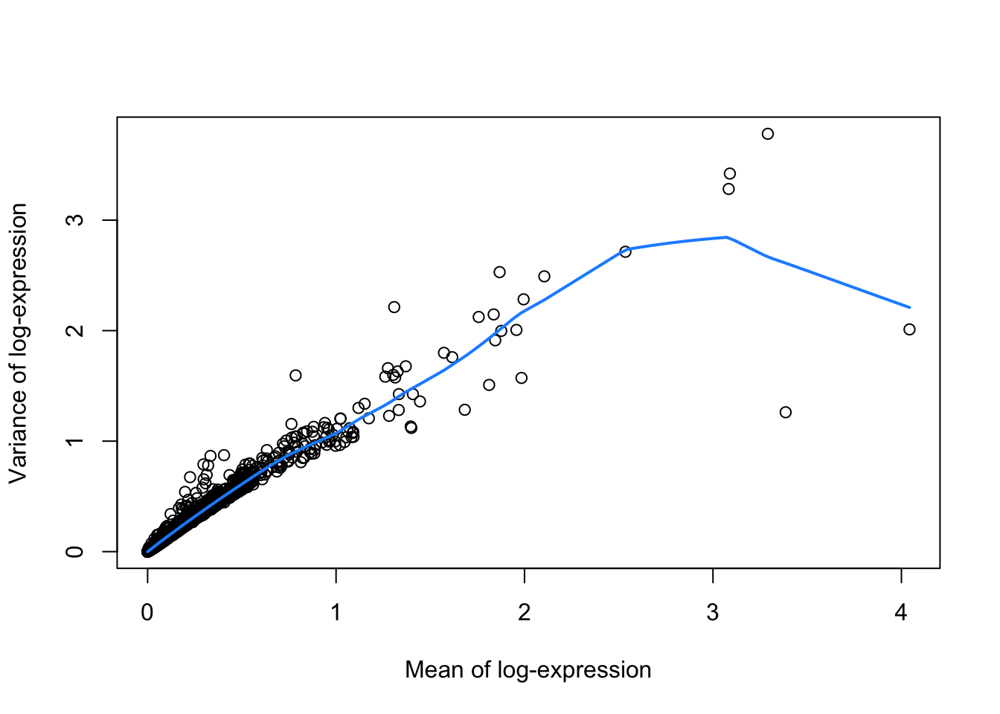
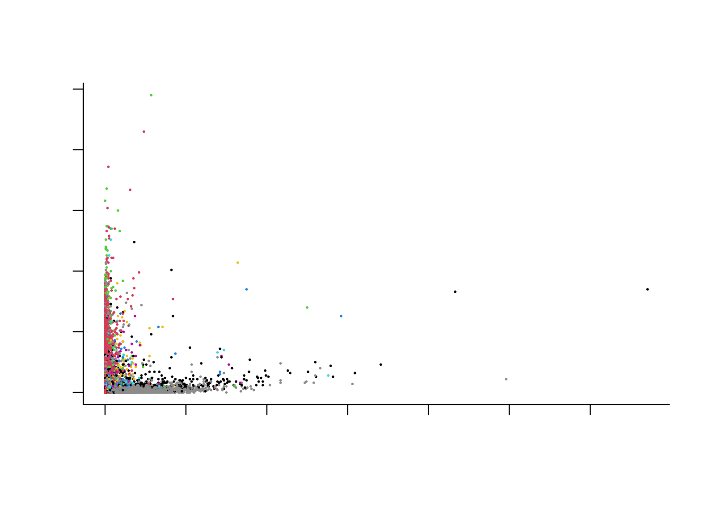

Lab3: Clustering, cell type annotation, differential expression
Koen Van den Berge and Jeroen Gilis
6/12/2021
1 Preamble: installation of Bioconductor libraries
# install BiocManager package if not installed yet.
# BiocManager is the package installer for Bioconductor software.
if (!requireNamespace("BiocManager", quietly = TRUE))
install.packages("BiocManager")
# install packages if not yet installed.
pkgs <- c("SingleCellExperiment",
"ExperimentHub",
"edgeR",
"biomaRt",
"DropletUtils",
"scRNAseq",
"scater",
"scuttle",
"scran",
"scry",
"BiocSingular",
"scDblFinder",
"Seurat",
"PCAtools",
"glmpca",
"genefilter",
"pheatmap",
"tidyverse",
"mclust",
"ggplot2",
"SingleR")
notInstalled <- pkgs[!pkgs %in% installed.packages()[,1]]
if(length(notInstalled) > 0){
BiocManager::install(notInstalled)
}## 'getOption("repos")' replaces Bioconductor standard repositories, see
## '?repositories' for details
##
## replacement repositories:
## CRAN: https://cran.rstudio.com## Bioconductor version 3.14 (BiocManager 1.30.16), R 4.1.2 (2021-11-01)## Installing package(s) 'genefilter', 'pheatmap', 'tidyverse', 'mclust',
## 'SingleR'## also installing the dependencies 'ps', 'rematch', 'processx', 'backports', 'gargle', 'uuid', 'cellranger', 'ids', 'rematch2', 'clipr', 'vroom', 'tzdb', 'callr', 'selectr', 'annotate', 'broom', 'dtplyr', 'forcats', 'googledrive', 'googlesheets4', 'haven', 'lubridate', 'modelr', 'readr', 'readxl', 'reprex', 'rstudioapi', 'rvest'##
## There is a binary version available but the source version is later:
## binary source needs_compilation
## backports 1.4.0 1.4.1 TRUE
##
##
## The downloaded binary packages are in
## /var/folders/24/8k48jl6d249_n_qfxwsl6xvm0000gn/T//RtmpPfiF6R/downloaded_packages## installing the source package 'backports'## Old packages: 'crayon', 'digest', 'glue', 'knitr', 'lattice', 'lifecycle',
## 'mgcv', 'mime', 'nlme', 'pillar', 'rlang', 'rmarkdown', 'stringi', 'tibble',
## 'tinytex', 'withr', 'xfun', 'Matrix'Steps taken in first two lab sessions:
Import the Macosko dataset as
SingleCellExperimentobject from thescRNAseqBioconductor package.Include ENSEMBL gene identifiers in the
rowDataRemove very lowly expressed genes
Remove low quality cells 4.1. Cells with outlying library size 4.2. Cells with outlying transcriptome complexity 4.3. Cells with outlying percentage of mitochondrial reads 4.4. Empty droplets 4.5. Doublets
Normalization 5.1. Compute log-normalized counts 5.2. Compute scaling factor to correct for differences in library size
Feature selection 6.1. Genes with high variance 6.2. Genes with high variance with respect to their mean expression 6.3. Genes with high deviance 6.4. Genes with high variance after variance-stabilizing transformation (VST)
Dimensionality reduction 7.1. Based on two most variable genes from step 6.2. 7.2. PCA 7.3. GLM-PCA 7.4. T-SNE 7.5. UMAP
2 The Macosko dataset
In this workshop session, we will analyze the single-cell RNA-seq dataset from the publication by Macosko et al., Cell 161, 1202–1214 from 2015 (link). This is the manuscript in which the droplet scRNA-seq technology Drop-seq was introduced. Six years after the original publication, drop-seq is still one of the most commonly adopted scRNA-seq protocols, as evidenced by the large number of citations for Macosko et al. (4.303 citations at November 3, 2021).
The basic idea behind the Drop-seq protocol can be taken from the graphical abstract of the publication.
knitr::include_graphics("macosko_graphicalAbstract.jpeg")The success of Drop-seq can be explained by the following advantageous features:
The use of unique molecular identifiers (UMIs). By working with UMIs, one count corresponds to one observed mRNA molecule present in the cell. Thanks to the use of UMI barcodes, PCR artifacts are reduced.
Scalability: microfluidics technology allows for performing the library prep reactions inside nanodroplets, in which single cells may be contained. Library prep occurs across all droplets simultaneously.
Cost: the experiment costs around 6.5 cents (USD) per cell.
Speed: The very large dataset that we will be working with today was generated in an experiment that took only 4 days.
In this particular experiment, Macosko et al. sequenced 49,300 cells from the mouse retina, identifying 39 transcriptionally distinct cell populations. The experiment was performed in 7 batches.
3 Data availability
3.1 SRA
The Sequence Read Archive (SRA) is the largest publicly available repository of high-throughput sequencing data. The data are stored by the National Center for Biotechnology Information (NCBI) services and multiple cloud storage providers. From this website “raw” sequencing data can be retrieved. In practice, these are usually .sra files, which can be downloaded and converted into FASTQ files using functions from the sratoolkit software.
For our dataset, the FASTQ data can be retrieved from this link. The data are stored as one file per sequencing batch, with each file approximately 20Gb. As such, it will be unfeasible to download and process these FASTQ files in this practical session.
Instead, for demonstrative purposes, we have taken a subsample of the FASTQ file for the first sequencing batch for you to work with. On this subsample, we may perform all the tasks that we would have performed on the full dataset. The steps that are required for downloading and quantifying drop-seq data can be found in a Shell script on our companion GitHub repository.
3.2 GEO
The dataset from Macosko et al. was also uploaded by the authors on the Gene Expression Omnibus (GEO) platform under accession number GSE63472, from which raw and readily-processed data files may be retrieved, including:
GSE63472_RAW.tar, a 90.6Gb object that contains the “raw data” for the experiment. In the scRNA-seq context, FASTQ files are often considered the raw data format.
GSE63472_P14Retina_merged_digital_expression.txt.gz, a 50.7Mb matrix that stores the gene expression values for each cell. These values are integer counts, that did not undergo any type of preprocessing or normalization.
GSE63472_mm10_reference_metadata.tar.gz, a 862.9Mb compressed folder containing information on the reference genome to which the scRNA-seq reads were aligned (see theory slides).
GSE63472_P14Retina_logDGE.txt.gz, a 316.8Mb compressed text file, not clear what it contains (results from a differential gene expression analysis, but with log-transformation, so log-fold changes maybe?).
As such, by downloading GSE63472_P14Retina_merged_digital_expression.txt.gz, we avoid re-quantifying the data, i.e., the translation from reads from the FASTQ files into a gene-level expression values for each cell.
One issue that often arises from data downloaded from GEO, is that there is no strict requirements for which data should be included in the upload by the authors. As such, from my personal experience, it can often be the case that important information like metadata are missing, or the content of the submitted files is unclear. Even if all the required data are available, as is the case here, we would still need to piece all the information together from different files and file formats before we can use them.
3.3 ExperimentHub
The Bioconductor ExperimentHub web resource, which can be accessed using the ExperimentHub R package, provides a central location where curated data from experiments, publications or training courses can be accessed. While it contains far less datasets than the SRA or GEO (4965 records to date), these datasets all follow the tidy data format of Bioconductor. Note that the ExperimentHub contains several types of data, like bulk and single-cell transcriptomics data, microarrays and more.
The Macosko dataset is available from ExperimentHub and can be accessed as follows:
library(ExperimentHub)
edb <- ExperimentHub()
edb[grep("Macosko", edb$title)] # find accession number (can be inefficient)## ExperimentHub with 2 records
## # snapshotDate(): 2021-10-19
## # $dataprovider: Steve McCarroll, GEO
## # $species: Mus musculus
## # $rdataclass: dgCMatrix, DataFrame
## # additional mcols(): taxonomyid, genome, description,
## # coordinate_1_based, maintainer, rdatadateadded, preparerclass, tags,
## # rdatapath, sourceurl, sourcetype
## # retrieve records with, e.g., 'object[["EH2690"]]'
##
## title
## EH2690 | Macosko retina counts
## EH2691 | Macosko retina colData## 5 x 5 sparse Matrix of class "dgCMatrix"
## r1_GGCCGCAGTCCG r1_CTTGTGCGGGAA r1_GCGCAACTGCTC r1_GATTGGGAGGCA
## KITL . . 1 .
## TMTC3 3 . . .
## CEP290 1 3 . 2
## 4930430F08RIK 2 1 2 .
## 1700017N19RIK . . . .
## r1_CCTCCTAGTTGG
## KITL .
## TMTC3 2
## CEP290 1
## 4930430F08RIK 1
## 1700017N19RIK .## DataFrame with 5 rows and 2 columns
## cell.id cluster
## <character> <integer>
## 1 r1_GGCCGCAGTCCG 2
## 2 r1_CTTGTGCGGGAA 2
## 3 r1_GCGCAACTGCTC 2
## 4 r1_GATTGGGAGGCA 2
## 5 r1_CCTCCTAGTTGG NA3.4 scRNASeq
In addition to ExperimentHub, Bioconductor provides the package scRNAseq. This package provides an even more user-friendly client to access (only) scRNA-seq datasets from the ExperimentHub web resource. Data retrieved using the scRNAseq package are stored as user-friendly SingleCellExperiment objects, with the expression data, gene-level information, cell-level information and experiment metadata all in place in one data object. The scRNA-seq package currently holds 61 datasets, including the data from Macosko et al.:
## class: SingleCellExperiment
## dim: 24658 49300
## metadata(0):
## assays(1): counts
## rownames(24658): KITL TMTC3 ... 1110059M19RIK GM20861
## rowData names(0):
## colnames(49300): r1_GGCCGCAGTCCG r1_CTTGTGCGGGAA ... p1_TAACGCGCTCCT
## p1_ATTCTTGTTCTT
## colData names(2): cell.id cluster
## reducedDimNames(0):
## mainExpName: NULL
## altExpNames(0):4 Import data
The scRNAseq package provides convenient access to several datasets. See the package Bioconductor page for more information.
# Code below might ask you to create an ExperimentHub directory.
# Type 'yes' and hit Enter, to allow this.
suppressPackageStartupMessages(library(scRNAseq))
sce <- MacoskoRetinaData()## snapshotDate(): 2021-10-19## see ?scRNAseq and browseVignettes('scRNAseq') for documentation## loading from cache## see ?scRNAseq and browseVignettes('scRNAseq') for documentation## loading from cache5 A SingleCellExperiment object
## class: SingleCellExperiment
## dim: 24658 49300
## metadata(0):
## assays(1): counts
## rownames(24658): KITL TMTC3 ... 1110059M19RIK GM20861
## rowData names(0):
## colnames(49300): r1_GGCCGCAGTCCG r1_CTTGTGCGGGAA ... p1_TAACGCGCTCCT
## p1_ATTCTTGTTCTT
## colData names(2): cell.id cluster
## reducedDimNames(0):
## mainExpName: NULL
## altExpNames(0):5.1 Accessing data from a SingleCellExperiment object
Please see Figure 4.1 in OSCA for an overview of a SingleCellExperiment object.
## List of length 1
## names(1): counts## 5 x 5 sparse Matrix of class "dgCMatrix"
## r1_GGCCGCAGTCCG r1_CTTGTGCGGGAA r1_GCGCAACTGCTC r1_GATTGGGAGGCA
## KITL . . 1 .
## TMTC3 3 . . .
## CEP290 1 3 . 2
## 4930430F08RIK 2 1 2 .
## 1700017N19RIK . . . .
## r1_CCTCCTAGTTGG
## KITL .
## TMTC3 2
## CEP290 1
## 4930430F08RIK 1
## 1700017N19RIK .## DataFrame with 24658 rows and 0 columns## DataFrame with 49300 rows and 2 columns
## cell.id cluster
## <character> <integer>
## r1_GGCCGCAGTCCG r1_GGCCGCAGTCCG 2
## r1_CTTGTGCGGGAA r1_CTTGTGCGGGAA 2
## r1_GCGCAACTGCTC r1_GCGCAACTGCTC 2
## r1_GATTGGGAGGCA r1_GATTGGGAGGCA 2
## r1_CCTCCTAGTTGG r1_CCTCCTAGTTGG NA
## ... ... ...
## p1_TCAAAAGCCGGG p1_TCAAAAGCCGGG 24
## p1_ATTAAGTTCCAA p1_ATTAAGTTCCAA 34
## p1_CTGTCTGAGACC p1_CTGTCTGAGACC 2
## p1_TAACGCGCTCCT p1_TAACGCGCTCCT 24
## p1_ATTCTTGTTCTT p1_ATTCTTGTTCTT 24## List of length 0
## names(0):5.2 Creating a new SingleCellExperiment object
## class: SingleCellExperiment
## dim: 24658 49300
## metadata(0):
## assays(1): counts
## rownames(24658): KITL TMTC3 ... 1110059M19RIK GM20861
## rowData names(0):
## colnames(49300): r1_GGCCGCAGTCCG r1_CTTGTGCGGGAA ... p1_TAACGCGCTCCT
## p1_ATTCTTGTTCTT
## colData names(0):
## reducedDimNames(0):
## mainExpName: NULL
## altExpNames(0):5.3 Storing (meta)data in a SingleCellExperiment object
fakeGeneNames <- paste0("gene", 1:nrow(sce))
rowData(sce)$fakeName <- fakeGeneNames
head(rowData(sce))## DataFrame with 6 rows and 1 column
## fakeName
## <character>
## KITL gene1
## TMTC3 gene2
## CEP290 gene3
## 4930430F08RIK gene4
## 1700017N19RIK gene5
## MGAT4C gene6# Remove again by setting to NULL
rowData(sce)$fakeName <- NULL
assays(sce)$logCounts <- log1p(assays(sce)$counts)
assays(sce)## List of length 2
## names(2): counts logCounts## 5 x 5 sparse Matrix of class "dgCMatrix"
## r1_GGCCGCAGTCCG r1_CTTGTGCGGGAA r1_GCGCAACTGCTC r1_GATTGGGAGGCA
## KITL . . 0.6931472 .
## TMTC3 1.3862944 . . .
## CEP290 0.6931472 1.3862944 . 1.098612
## 4930430F08RIK 1.0986123 0.6931472 1.0986123 .
## 1700017N19RIK . . . .
## r1_CCTCCTAGTTGG
## KITL .
## TMTC3 1.0986123
## CEP290 0.6931472
## 4930430F08RIK 0.6931472
## 1700017N19RIK .6 Obtaining and including rowData
The rowData slot of a SingleCellExperiment object allows for storing information on the features, i.e. the genes, in a dataset. In our object, the rowData slot is empty.
## DataFrame with 24658 rows and 0 columnsAs such, the only information we have on the genes are their names, which can be retrieved as the rownames of the expression matrix.
## [1] "KITL" "TMTC3" "CEP290" "4930430F08RIK"
## [5] "1700017N19RIK" "MGAT4C"These are the gene names (symbols). Note that it may be useful to include additional information in the rowData slot. For instance, we may want to store:
- Unambiguous gene identifiers (e.g. from ENSEMBL)
- On which chromosome the gene is located
- Gene length (genomic start position and end position)
- Others…
library("biomaRt")
ensembl75 <- useEnsembl(biomart = 'genes',
dataset = 'mmusculus_gene_ensembl',
version = 75)
head(listAttributes(ensembl75)) # potential info to extractgeneInfo <- getBM(attributes = c("ensembl_gene_id", # ENSEMBL unambiguous identifier
"mgi_symbol", # Gene symbol (to link with SCE rownames),
"chromosome_name", # On which chromosome
"start_position", # Start position
"end_position"),# End position
mart = ensembl75)
head(geneInfo)geneInfo$mgi_symbol_upper <- toupper(geneInfo$mgi_symbol)
# match between gene info and rownames
sum(rownames(sce) %in% geneInfo$mgi_symbol_upper)## [1] 24360## [1] 298## DataFrame with 6 rows and 6 columns
## ensembl_gene_id mgi_symbol chromosome_name start_position
## <character> <character> <character> <integer>
## KITL ENSMUSG00000019966 Kitl 10 100015630
## TMTC3 ENSMUSG00000036676 Tmtc3 10 100443902
## CEP290 ENSMUSG00000019971 Cep290 10 100488289
## 4930430F08RIK ENSMUSG00000046567 4930430F08Rik 10 100572274
## 1700017N19RIK ENSMUSG00000056912 1700017N19Rik 10 100592386
## MGAT4C ENSMUSG00000019888 Mgat4c 10 101681487
## end_position mgi_symbol_upper
## <integer> <character>
## KITL 100100413 KITL
## TMTC3 100487350 TMTC3
## CEP290 100573655 CEP290
## 4930430F08RIK 100589259 4930430F08RIK
## 1700017N19RIK 100618391 1700017N19RIK
## MGAT4C 102391469 MGAT4C7 Filtering non-informative genes
## Loading required package: limma##
## Attaching package: 'limma'## The following object is masked from 'package:BiocGenerics':
##
## plotMA##
## Attaching package: 'edgeR'## The following object is masked from 'package:SingleCellExperiment':
##
## cpm# A very simple strategy: remove all genes that are expressed in less than 10
# out of 49300 cells -> note that this a very lenient filtering criterium
keep <- rowSums(assays(sce)$counts > 0) > 10
table(keep)## keep
## FALSE TRUE
## 6771 17887Note that dedicated functions for filtering out lowly expressed genes exist. One such function is the filterByExpr function of the edgeR R package. In brief, the strategy keeps genes that have at least “min.count” reads in a worthwhile number samples.
More precisely, the filtering keeps genes that have count-per-million (CPM) above k in n samples.
k is determined by the min.count argument to the function, and by the sample library sizes.
n is determined by the design matrix. n can be seen as the smallest group sample size. A group of samples/cells can be defined as cells that are more similar to one another, e.g., from the same sequencing batch, the same patient…. Here we could also use the cluster assignment (cell type) for each cell as the grouping variable; note however, that this usually is not available until a later stage in the analysis pipeline (i.e., after dimension reduction and clustering, topics we will cover next session.)
If all the group sizes are larger than the large.n argument of the filterByExpr function, which defaults to 10, then n will be taken as min.prop* the the number of samples/cells in the smallest group.
Note that all the group sizes will often be larger than the large.n in case of single-cell data.
8 Quality control
In quality control (QC), we check the quality of our dataset. In particular, we investigate undesirable oddities, such as low-quality cells, empty droplets or doublets.
8.1 Identifying and removing low-quality cells
There are several distinguishing features of low-quality cells that can be used in order to identify them. As described in the OSCA book book):
The library size is defined as the total sum of counts across all relevant features for each cell. Here, we will consider the relevant features to be the endogenous genes. Cells with small library sizes are of low quality as the RNA has been lost at some point during library preparation, either due to cell lysis or inefficient cDNA capture and amplification.
The number of expressed features in each cell is defined as the number of endogenous genes with non-zero counts for that cell. Any cell with very few expressed genes is likely to be of poor quality as the diverse transcript population has not been successfully captured.
We sometimes have spike-in (ERCC) transcripts available. The proportion of reads mapped to spike-in transcripts is calculated relative to the total count across all features (including spike-ins) for each cell. As the same amount of spike-in RNA should have been added to each cell, any enrichment in spike-in counts is symptomatic of loss of endogenous RNA.
In the absence of spike-in transcripts, the proportion of reads mapped to genes in the mitochondrial genome can be used. High proportions are indicative of poor-quality cells (Islam et al. 2014; Ilicic et al. 2016), presumably because of loss of cytoplasmic RNA from perforated cells. The reasoning is that, in the presence of modest damage, the holes in the cell membrane permit efflux of individual transcript molecules but are too small to allow mitochondria to escape, leading to a relative enrichment of mitochondrial transcripts. For single-nuclei RNA-seq experiments, high proportions are also useful as they can mark cells where the cytoplasm has not been successfully stripped.
8.2 Calculate QC variables
This function calculates useful QC metrics for identification and removal of potentially problematic cells. Default per-cell metrics are the sum of counts (i.e., the library size) and the number of detected features. The percentage of counts in the top features also provides a measure of library complexity.
If subsets is specified, these statistics are also computed for each subset of features. This is useful for investigating gene sets of interest, e.g., mitochondrial genes.
library(scater)
# check ERCC spike-in transcripts
sum(grepl("^ERCC-", rownames(sce))) # no spike-in transcripts available## [1] 0# check mitochondrial genes
sum(rowData(sce)$chromosome_name=="MT",na.rm = TRUE) # 28 mitochondrial genes## [1] 28## [1] 28is.mito <- grepl("^MT-", rownames(sce))
## calculate QC metrics
df <- perCellQCMetrics(sce, subsets=list(Mito=is.mito))
head(df)## DataFrame with 6 rows and 6 columns
## sum detected subsets_Mito_sum subsets_Mito_detected
## <numeric> <integer> <numeric> <integer>
## r1_GGCCGCAGTCCG 37478 7235 427 14
## r1_CTTGTGCGGGAA 32034 6921 503 15
## r1_GCGCAACTGCTC 28140 6390 460 13
## r1_GATTGGGAGGCA 20352 5727 326 11
## r1_CCTCCTAGTTGG 19550 5769 264 9
## r1_AGTCAAGCCCTC 19176 5217 253 12
## subsets_Mito_percent total
## <numeric> <numeric>
## r1_GGCCGCAGTCCG 1.13934 37478
## r1_CTTGTGCGGGAA 1.57021 32034
## r1_GCGCAACTGCTC 1.63468 28140
## r1_GATTGGGAGGCA 1.60181 20352
## r1_CCTCCTAGTTGG 1.35038 19550
## r1_AGTCAAGCCCTC 1.31936 19176# add QC variables to sce object
colData(sce) <- cbind(colData(sce), df)
# the QC variables have now been added to the colData of our SCE object.
head(colData(sce))## DataFrame with 6 rows and 8 columns
## cell.id cluster sum detected subsets_Mito_sum
## <character> <integer> <numeric> <integer> <numeric>
## r1_GGCCGCAGTCCG r1_GGCCGCAGTCCG 2 37478 7235 427
## r1_CTTGTGCGGGAA r1_CTTGTGCGGGAA 2 32034 6921 503
## r1_GCGCAACTGCTC r1_GCGCAACTGCTC 2 28140 6390 460
## r1_GATTGGGAGGCA r1_GATTGGGAGGCA 2 20352 5727 326
## r1_CCTCCTAGTTGG r1_CCTCCTAGTTGG NA 19550 5769 264
## r1_AGTCAAGCCCTC r1_AGTCAAGCCCTC NA 19176 5217 253
## subsets_Mito_detected subsets_Mito_percent total
## <integer> <numeric> <numeric>
## r1_GGCCGCAGTCCG 14 1.13934 37478
## r1_CTTGTGCGGGAA 15 1.57021 32034
## r1_GCGCAACTGCTC 13 1.63468 28140
## r1_GATTGGGAGGCA 11 1.60181 20352
## r1_CCTCCTAGTTGG 9 1.35038 19550
## r1_AGTCAAGCCCTC 12 1.31936 191768.3 Exploratory data analysis
In the figure below, we see that several cells have a very low number of expressed genes, and where most of the molecules are derived from mitochondrial genes. This indicates likely damaged cells, presumably because of loss of cytoplasmic RNA from perforated cells, so we should remove these for the downstream analysis.
8.4 QC using adaptive thresholds
Below, we remove cells that are outlying with respect to
- A low sequencing depth (number of UMIs);
- A low number of genes detected;
- A high percentage of reads from mitochondrial genes.
Here we will remove cells for QC based on adaptive thresholds related to the three points from above. Adaptive trhesholds are used as opposed to fixed thresholds.
With fixed thresholds, we use fixed cut-off values for each cell to pass QC, e.g., we might consider cells to be low quality if they have library sizes below 100,000 reads; express fewer than 5,000 genes; have spike-in proportions above 10%; or have mitochondrial proportions above 10%.
With adaptive thresholds, we assume that most of the dataset consists of high-quality cells. We then identify cells that are outliers for the various QC metrics, based on the median absolute deviation (MAD) from the median value of each metric across all cells. By default, we consider a value to be anoutlier if it is more than 3 MADs from the median in the “problematic” direction. This is loosely motivated by the fact that such a filter will retain 99% of non-outlier values that follow a normal distribution. We demonstrate adopting adaptive thresholds on the Macosko dataset:
lowLib <- isOutlier(df$sum, type="lower", log=TRUE)
lowFeatures <- isOutlier(df$detected, type="lower", log=TRUE)
highMito <- isOutlier(df$subsets_Mito_percent, type="higher")
table(lowLib)## lowLib
## FALSE
## 49300## lowFeatures
## FALSE TRUE
## 49287 13## highMito
## FALSE TRUE
## 45890 3410## discardCells
## FALSE TRUE
## 45877 3423colData(sce)$discardCells <- discardCells
# visualize cells to be removed
# plotColData(sce, x = "sum", y="detected", colour_by="discardCells")
# plotColData(sce, x = "detected", y="subsets_Mito_percent", colour_by = "discardCells")We removed a total of \(3423\) cells, most of which because of an outlyingly high percentage of reads from mitochondrial genes.
8.5 Identifying and removing empty droplets
Note that the removal of cells with low sequencing depth using the adaptive threshold procedure above is a way of removing empty droplets. Other approaches are possible, e.g., removing cells by statistical testing using emtpyDrops. This does require us to specify a lower bound on the total number of UMIs, below which all cells are considered to correspond to empty droplets. This lower bound may not be trivial to derive, but the barcodeRanks function can be useful to identify an elbow/knee point.
In brief, the steps taken by the emtpyDrops function can be summarized as follows:
Define threshold T of total UMI counts (e.g. with the help of the
barcodeRanksfunction), below which cells may be considered to be from empty droplets. Call this set of cells E.Define \(A_g\) as the total gene expression across all cells in E.
Define \(pi_g\) as the relative contribution of gene g to the ambient profile.
Calculate p-value for each cell to have a transcriptional profile similar to the ambient solution. Intuitively, a p-value below the requested alpha level would correspond to a cell for which the observed count profile strongly deviates from the count profile observed in the cells with a library size below threshold T, i.e., a non-empty droplet.
library(DropletUtils)
bcrank <- barcodeRanks(counts(sce))
# Only showing unique points for plotting speed. Duplicated ranks are a
# consequence of ties in the ranks, i.e., when cells have an equal library size.
sum(duplicated(bcrank$rank))## [1] 43864uniq <- !duplicated(bcrank$rank)
plot(bcrank$rank[uniq], bcrank$total[uniq], log="xy",
xlab="Rank", ylab="Total UMI count", cex.lab=1.2)
abline(h=metadata(bcrank)$inflection, col="darkgreen", lty=2)
abline(h=metadata(bcrank)$knee, col="dodgerblue", lty=2)
abline(h=350, col="orange", lty=2) # picked visually myself
legend("topright",
legend=c("Inflection", "Knee", "Empirical knee point"),
col=c("darkgreen", "dodgerblue", "orange"),
lty=2,
cex=1.2)
set.seed(100)
limit <- 350
all.out <- emptyDrops(counts(sce), lower=limit, test.ambient=TRUE)
# p-values for cells with total UMI count under the lower bound.
hist(all.out$PValue[all.out$Total <= limit & all.out$Total > 0],
xlab="P-value", main="", col="grey80", breaks=20)# but note that it would remove a very high number of cells
length(which(all.out$FDR <= 0.01)) # retained## [1] 272308.6 Identifying and removing doublets
We will use scDblFinder to detect doublet cells.
As discussed in the theory session of last week, the steps taken by scDblFinder can be summarized as follows:
Perform principal components analysis (PCA) on log-normalized expression counts. This allows for projecting each cell in the dataset into a 2D space (for more details on PCA, see next weeks session).
Randomly select two cells, sum their counts and normalize, and project into PCA space from step 1. In other words, artificially generate doublets and see where they are located in the 2D space.
Repeat step 2 many times (generate many artificial doublets).
Generate neighbor network in the 2D space. The network is then used to estimate a number of characteristics for each cell, in particular the proportion f artificial doublets among the nearest neighbors.
Use this information, along with other predictors, to train a classifier (gradient boosted tree) that allows for distinguishing doublets from singlets.
Note: only classifies for identifying doublets for which the two cells are from different cell type clusters.
set.seed(211103)
sampleID <- unlist(lapply(strsplit(colData(sce)$cell.id, split="_"), "[[", 1))
table(sampleID)## sampleID
## p1 r1 r2 r3 r4 r5 r6
## 3942 5953 8414 5319 7015 7487 7747sce <- scDblFinder(sce,
returnType="table",
samples = factor(sampleID))
table(sce$scDblFinder.class)##
## singlet doublet
## 41036 4841## visualize these scores
## explore doublet score wrt original cluster labels
boxplot(log1p(sce$scDblFinder.score) ~ factor(colData(sce)$cluster, exclude=NULL))##
## 1 2 3 4 5 6 7 8 9 10 11
## singlet 212 364 254 64 66 174 263 142 310 164 175
## doublet 3 13 21 8 8 31 54 7 27 25 32
##
## 12 13 14 15 16 17 18 19 20 21 22
## singlet 206 45 86 52 196 312 64 109 320 173 204
## doublet 48 5 22 20 55 59 16 16 62 74 57
##
## 23 24 25 26 27 28 29 30 31 32 33
## singlet 215 24994 1549 1937 472 343 460 511 412 269 662
## doublet 44 1949 224 224 157 138 121 119 90 49 151
##
## 34 35 36 37 38 39 <NA>
## singlet 1418 36 41 228 57 62 3415
## doublet 146 7 4 12 2 4 737##
## 1 2 3 4 5 6
## singlet 0.98604651 0.96551724 0.92363636 0.88888889 0.89189189 0.84878049
## doublet 0.01395349 0.03448276 0.07636364 0.11111111 0.10810811 0.15121951
##
## 7 8 9 10 11 12
## singlet 0.82965300 0.95302013 0.91988131 0.86772487 0.84541063 0.81102362
## doublet 0.17034700 0.04697987 0.08011869 0.13227513 0.15458937 0.18897638
##
## 13 14 15 16 17 18
## singlet 0.90000000 0.79629630 0.72222222 0.78087649 0.84097035 0.80000000
## doublet 0.10000000 0.20370370 0.27777778 0.21912351 0.15902965 0.20000000
##
## 19 20 21 22 23 24
## singlet 0.87200000 0.83769634 0.70040486 0.78160920 0.83011583 0.92766210
## doublet 0.12800000 0.16230366 0.29959514 0.21839080 0.16988417 0.07233790
##
## 25 26 27 28 29 30
## singlet 0.87366046 0.89634429 0.75039746 0.71309771 0.79173838 0.81111111
## doublet 0.12633954 0.10365571 0.24960254 0.28690229 0.20826162 0.18888889
##
## 31 32 33 34 35 36
## singlet 0.82071713 0.84591195 0.81426814 0.90664962 0.83720930 0.91111111
## doublet 0.17928287 0.15408805 0.18573186 0.09335038 0.16279070 0.08888889
##
## 37 38 39 <NA>
## singlet 0.95000000 0.96610169 0.93939394 0.82249518
## doublet 0.05000000 0.03389831 0.06060606 0.17750482
## [1] 0.7053791 0.9999142## [1] 0.0000222011 0.70139151819 Normalization
Normalization aims to remove technical effects such as sequencing depth so that comparisons between cells are not confounded by them. The most commonly used normalization methods methods use scaling, where a scaling factor (also called size factor, normalization factor) is estimated for each cell. These scaling factors (e.g., the effective library size) can be included as an offset to downstream modeling procedures. This effectively allows for performing inference on the relative abundance of a gene in a cell, after accounting for library size and RNA composition differences between cells, which is much more relevant than comparing raw counts
For normalization, the size factors \(s_i\) computed here are simply scaled library sizes: \[ N_i = \sum_g Y_{gi} \] \[ s_i = N_i / \bar{N}_i \]
sce <- logNormCounts(sce)
# note we also returned log counts: see the additional logcounts assay.
sce## class: SingleCellExperiment
## dim: 17887 41036
## metadata(0):
## assays(2): counts logcounts
## rownames(17887): KITL TMTC3 ... GM16012 GM21464
## rowData names(6): ensembl_gene_id mgi_symbol ... end_position
## mgi_symbol_upper
## colnames(41036): r1_GGCCGCAGTCCG r1_CTTGTGCGGGAA ... p1_TAACGCGCTCCT
## p1_ATTCTTGTTCTT
## colData names(15): cell.id cluster ... scDblFinder.cxds_score
## sizeFactor
## reducedDimNames(0):
## mainExpName: NULL
## altExpNames(0):# you can extract size factors using
sf <- librarySizeFactors(sce)
mean(sf) # equal to 1 due to scaling.## [1] 1From the OSCA book: Alternatively, we may use more sophisticated approaches for variance stabilizing transformations in genomics data, e.g., DESeq2 or sctransform. These aim to remove the mean-variance trend more effectively than the simpler transformations mentioned above, though it could be argued whether this is actually desirable. For low-coverage scRNA-seq data, there will always be a mean-variance trend under any transformation, for the simple reason that the variance must be zero when the mean count is zero. These methods also face the challenge of removing the mean-variance trend while preserving the interesting component of variation, i.e., the log-fold changes between subpopulations; this may or may not be done adequately, depending on the aggressiveness of the algorithm.
In practice, the log-transformation is a good default choice due to its simplicity and interpretability, and is what we will be using for all downstream analyses.
— end lab session 1 —
10 Normalization (continued)
Normalization is necessary to correct for several sources of technical variation:
- Differences in sequencing depth between samples. Some samples get sequenced deeper in the sense that they consist of more (mapped) reads and therefore can be considered to contain a higher amount of information, which we should be taking into account. In addition, if a sample is sequenced deeper, it is natural that the counts for each gene will be higher, jeopardizing a direct comparison of the expression counts.
- Differences in RNA population composition between samples. As an extreme example, suppose that two samples have been sequenced to the exact same depth. One sample is contaminated and has a very high concentration of the contaminant cDNA being sequenced, but otherwise the two samples are identical. Since the contaminant will be taking up a significant proportion of the reads being sequenced, the counts will not be directly comparable between the samples. Hence, we may also want to correct for differences in the composition of the RNA population of the samples (see edgeR manual chapter 2.8).
- Other technical variation such as sample-specific GC-content or transcript length effects may also be accounted for.
##
## 1 2 3 4 5 6 7 8 9 10 11 12 13
## 212 364 254 64 66 174 263 142 310 164 175 206 45
## 14 15 16 17 18 19 20 21 22 23 24 25 26
## 86 52 196 312 64 109 320 173 204 215 24994 1549 1937
## 27 28 29 30 31 32 33 34 35 36 37 38 39
## 472 343 460 511 412 269 662 1418 36 41 228 57 62Below, we will visualize the normalization occurring between two cells of the same cell type (which could be considered technical repeats):
select <- sce$cluster == "1"
select[is.na(select)] <- FALSE
cs <- colSums(assays(sce)$counts[,select])
cs[order(cs, decreasing = TRUE)][c(1,10)]## r2_GTTTACTTCCCC r1_GATTTCCTCTGA
## 20869 14719Let’s take a look at how comparable two cells (replicates) of cluster 1 are. We will compare the cell with the highest library size with the cell that has the 10th highest library size using MD-plots (mean-difference plots, as introduced by Dudoit et al. (2002)), also sometimes referred to as MA-plots.
targetCells <- names(cs[order(cs, decreasing = TRUE)][c(1,10)])
M <- rowMeans(assays(sce)$counts[,targetCells])
D <- assays(sce)$counts[,targetCells[2]] / assays(sce)$counts[,targetCells[1]]
plot(x = log(M), y = log2(D),
pch = 16, cex=1/3,
main = paste0("Cell ", targetCells[2], " vs cell ", targetCells[1]),
xlab = "Log mean", ylab = "Log2 fold-change",
bty = 'l')
abline(h = 0, col="orange", lwd=2)We see clear bias in the comparison of the 1st and 10th most deeply sequenced cell from cell cluster 1. We see that the log fold-changes are biased downwards. This means that, on average, a gene is higher expressed in cell 1 versus cell 10. Looking at the library sizes, we can indeed see that the library size for cell 1 is 20869 counts, while it is only 14719 counts for cell 10! This is a clear library size effect that we should take into account.
# normalize the count data using the previously computed "size factors"
assay(sce, "normed") <- normalizeCounts(sce,
log=FALSE,
size.factors=sce$sizeFactor,
pseudo.count=0)
M <- rowMeans(assays(sce)$normed[,targetCells])
D <- assays(sce)$normed[,targetCells[2]] / assays(sce)$normed[,targetCells[1]]
plot(x = log(M), y = log2(D),
pch = 16, cex=1/3,
main = paste0("Cell ", targetCells[2], " vs cell ", targetCells[1]),
xlab = "Log mean", ylab = "Log2 fold-change",
bty = 'l')
abline(h = 0, col="orange", lwd=2)
Upon normalizing the data using size factors, we have removed bias as a consequence of differences in sequencing depth.
Note that we computed the normalized count matrix only for demonstrating the effect of such normalization. In a typical workflow, the size factors are used as offsets in the downstream models rather than to perform data transformation. In brief, such transformation would distort the mean-variance relationship in the data. For more details, we refer to the document that was touched upon in the first theory session (link)
11 Feature selection
As dimensions increase, shortest and farthest distances between points become nearly inseparable. In high-dimensional space, it is therefore extremely difficult to separate signal from noise.
In order to recover structure (e.g. setting up a dimension-reduced space to help us find cell-type clusters in the data), we want to move to an informative, lower-dimensional space. We will select genes which we hope are informative for recovering the biological structure. But what defines an informative gene?
11.1 Selecting genes with high variance
The simplest approach to quantifying per-gene variation is to compute the variance of the log-normalized expression values (i.e., “log-counts”) for each gene across all cells.
11.2 Selecting genes with high variation with respect to mean
While calculation of the per-gene variance is simple, feature selection requires modelling of the mean-variance relationship. Indeed, not accounting for the mean-variance structure while selecting highly variable genes will oftentimes boil down to selecting the most highly expressed genes. The log-transformation is a helpful variance stabilizing transformation, however, it is not perfect, meaning that the variance of a gene is not completely independent of its mean. Therefore, feature selection may still be driven by average expression rather than underlying biological heterogeneity.
A (rightly so) popular approach is to select genes that have a high variance with respect to their mean. Often, first an empirical mean-variance trend is fitted, upon which genes with the highest positive residuals are selected. Being intuitive, reasonable and fairly straight-forward, this method is widely used.
To account for the mean-variance effect, we use the modelGeneVar function of the scran package to fit a trend to the variance with respect to abundance across all genes (on log-normalized expression values of the sce object).
## DataFrame with 6 rows and 6 columns
## mean total tech bio p.value
## <numeric> <numeric> <numeric> <numeric> <numeric>
## KITL 0.008777743 0.011468955 0.011567858 -9.89021e-05 0.525710
## TMTC3 0.047808247 0.070339120 0.062648596 7.69052e-03 0.177233
## CEP290 0.538342285 0.797002183 0.654153448 1.42849e-01 0.049759
## 4930430F08RIK 0.048310644 0.063629062 0.063302338 3.26723e-04 0.484472
## 1700017N19RIK 0.000483927 0.000534856 0.000638521 -1.03665e-04 0.889643
## MGAT4C 0.015591625 0.015819602 0.020527248 -4.70765e-03 0.958176
## FDR
## <numeric>
## KITL 1
## TMTC3 1
## CEP290 1
## 4930430F08RIK 1
## 1700017N19RIK 1
## MGAT4C 1The fitted value for each gene is used as a proxy for the technical component of variation for each gene, under the assumption that most genes exhibit a low baseline level of variation that is not biologically interesting. The biological component of variation for each gene is defined as the the residual from the trend. Ranking genes by the biological component enables identification of interesting genes for downstream analyses in a manner that accounts for the mean-variance relationship.
fitRetina <- metadata(dec)
plot(fitRetina$mean, fitRetina$var,
xlab="Mean of log-expression",
ylab="Variance of log-expression")
curve(fitRetina$trend(x), col="dodgerblue", add=TRUE, lwd=2)
We are interested in those genes for which the variance in expression is higher than what we would expect for that gene based on its mean expression.
## [1] "RHO" "CALM1" "MEG3" "GNGT1" "RPGRIP1" "TRPM1"# plot these
plot(fitRetina$mean, fitRetina$var,
col = c("orange", "darkseagreen3")[(names(fitRetina$mean) %in% hvg)+1],
xlab="Mean of log-expression",
ylab="Variance of log-expression")
curve(fitRetina$trend(x), col="dodgerblue", add=TRUE, lwd=2)
legend("topleft",
legend = c("Selected", "Not selected"),
col = c("darkseagreen3", "orange"),
pch = 16,
bty='n')As a comparison, we could color the genes on this figure according to the selection that was made purely by looking at the raw variance of each gene.
plot(fitRetina$mean, fitRetina$var,
col = c("orange", "steelblue")[(names(fitRetina$mean) %in% highVarGenes)+1],
xlab="Mean of log-expression",
ylab="Variance of log-expression")
curve(fitRetina$trend(x), col="dodgerblue", add=TRUE, lwd=2)
legend("topleft",
legend = c("Selected", "Not selected"),
col = c("steelblue", "orange"),
pch = 16,
bty='n')As expected, we here simply select genes with a high variance, without recognizing that a high variance is typically driven by a high mean.
11.3 High deviance genes
Here, we will select genes with a high residual deviance. The idea is that we assume a null model of constant expression fraction (i.e., RNA concentration) across all cells. We subsequently calculate a goodness-of-fit statistic for each gene, assessing whether the model is a good approximation to the gene expression of the corresponding gene.
If the model fits poorly, i.e., the gene has a high deviance, the expression fraction varies significantly across the cells in our datasets.Genes with a high deviance will thus most poorly fit a null model where the relative abundance is equal for all cells, which therefore are informative.
#BiocManager::install("scry")
library(scry)
sce <- devianceFeatureSelection(object = sce,
assay = "counts",
sorted = FALSE)
plot(sort(rowData(sce)$binomial_deviance, decreasing = TRUE),
type="l",
xlab="ranked genes",
ylab="binomial deviance",
main="Feature Selection with Deviance")
abline(v=2000, lty=2, col="red")Our plot looks similar to one displayed in the vignette of the scry package. Based on that plot, the authors suggest retaining 2.000 genes (the top 2000 based on the deviance residuals) for downstream dimensionality reduction and clustering.
11.4 Seurat VST
Another very common feature selection strategy is the variance-stabilizing transformation from the Seurat R package, which amounts to calculating Pearson residuals from a regularized negative binomial regression model, with sequencing depth as a covariate.
Intermezzo: interoperability between SingleCellExperiment and Seurat objects
In this lecture series, we always make use of the SingleCellExperiment object and the packages available from Bioconductor. Another very popular toolbox for performing scRNA-seq data analysis is Seurat. However, functions from Seurat cannot be used directly to manipulate SingleCellExperiment objects, and vice versa. Fortunately, efforts have been made to increase the interoperability between the two toolboxes.
## Attaching SeuratObject##
## Attaching package: 'Seurat'## The following object is masked from 'package:SummarizedExperiment':
##
## Assays## Warning: Feature names cannot have underscores ('_'), replacing with dashes
## ('-')
## Warning: Feature names cannot have underscores ('_'), replacing with dashes
## ('-')## An object of class Seurat
## 17887 features across 41036 samples within 1 assay
## Active assay: originalexp (17887 features, 0 variable features)On this object, we may use functions from the Seurat toolbox. For instance, we may search for highly variable features using Seurat’s VST implementation:
seurat_obj <- Seurat::NormalizeData(seurat_obj,
normalization.method = "LogNormalize",
scale.factor = 10000)
seurat_obj <- FindVariableFeatures(object = seurat_obj,
selection.method = "vst")## An object of class Seurat
## 17887 features across 41036 samples within 1 assay
## Active assay: originalexp (17887 features, 2000 variable features)## [1] "CARTPT" "HBB-BS" "RGS5" "HBA-A1" "HBA-A2" "NEFL"12 Dimensionality reduction
Note that, below, we color the cells using the known, true cell type label as defined in the metadata, to empirically evaluate the dimensionality reduction. In reality, we don’t know this yet at this stage.
12.1 The most basic DR
Just by looking at the top two genes based on our feature selection criterion, we can already see some separation according to the cell type!
colData(sce)$cluster <- as.factor(colData(sce)$cluster)
cl <- colData(sce)$cluster
par(bty='l')
plot(x = assays(sce)$counts[hvg[1],],
y = assays(sce)$counts[hvg[2],],
col = as.numeric(cl),
pch = 16, cex = 1/3,
xlab = "Most informative gene",
ylab = "Second most informative gene",
main = "Cells colored acc to cell type")
We are able to recover quite some structure. However, many cell populations remain obscure, and the plot is overcrowded.
12.2 Linear dimensionality reduction: PCA
A DR method is linear when the reduced dimensions are a linear function of the original variables. For example, in PCA, each principal component is a linear combination of genes, therefore the DR is a linear function of the original variables.
Typically, PCA is performed on log-transformed normalized counts. The log-transformation helps somewhat, but not completely, to account for the mean-variance relationship. PCA works well for bulk RNA-seq data. However, the structure of scRNA-seq data is often too complex to be visualized by a small number of PCs.
There are several R functions that allow you to perform PCA. Here, we make use of the runPCA function of the scater package, which has been specifically developed for performing PCA on SingleCellExperiment objects. We calculate the top 30 principal components.
12.2.1 PCA with feature selection
PCA has been performed. The PCA information has been automatically stored in the reducedDim slot of the SingleCellExperiment object.
## [1] "PCA"## PC1 PC2 PC3 PC4 PC5
## r1_GGCCGCAGTCCG 9.782147 -0.06989828 0.53682936 -4.285499 0.4437403
## r1_CTTGTGCGGGAA 9.710234 0.26092747 0.47567655 -4.978495 0.7599940
## r1_GCGCAACTGCTC 9.859269 0.16764772 0.68577161 -4.358120 0.4952484
## r1_GATTGGGAGGCA 9.585260 -0.02842153 -0.07751398 -4.825305 0.9111534
## r1_CCTCCTAGTTGG 9.901159 -0.10277759 0.25045816 -4.191151 0.5552125
## r1_AGTCAAGCCCTC -4.658214 -0.21318880 -0.97465866 1.203952 3.1182027
## PC6 PC7 PC8 PC9 PC10 PC11
## r1_GGCCGCAGTCCG -0.8783709 0.8110351 -1.6039082 0.9163174 -1.469966 -0.3202611
## r1_CTTGTGCGGGAA -0.9647669 1.6056783 -0.8339512 1.2459207 -1.072585 -0.3908371
## r1_GCGCAACTGCTC -0.8623239 0.7409644 -1.8074712 1.2098030 -1.655158 -0.4278883
## r1_GATTGGGAGGCA -1.0407473 1.5968654 -0.8256230 1.3308616 -1.376928 -0.4321302
## r1_CCTCCTAGTTGG -0.8564299 0.8691439 -1.4532843 0.9992053 -1.675298 -0.4580044
## r1_AGTCAAGCCCTC -1.2935647 1.8744985 0.1631854 -0.7715584 -0.727341 -1.0121014
## PC12 PC13 PC14 PC15 PC16
## r1_GGCCGCAGTCCG -0.4850761 -1.1028970 -0.28971405 0.95317249 0.075099779
## r1_CTTGTGCGGGAA -0.6161034 -0.9086733 -0.03621874 0.98432865 -0.033842442
## r1_GCGCAACTGCTC -0.5135708 -0.9734205 -0.21992930 1.03457308 0.197066086
## r1_GATTGGGAGGCA -0.3053884 -1.0257235 -0.08283002 1.02434633 0.007373196
## r1_CCTCCTAGTTGG -0.3431460 -1.1719912 -0.45890504 1.29849300 0.310448501
## r1_AGTCAAGCCCTC -1.0511057 0.2203544 -0.26394145 -0.07750261 0.754847869
## PC17 PC18 PC19 PC20 PC21
## r1_GGCCGCAGTCCG -0.382484342 -0.4834363 -0.4365855 -0.22335165 0.04439278
## r1_CTTGTGCGGGAA -0.698945386 -0.8001994 -0.5467860 -0.42223415 0.12788414
## r1_GCGCAACTGCTC -0.487704332 -0.7538982 -0.5558649 -0.41815539 -0.40311719
## r1_GATTGGGAGGCA -0.626201355 -0.6633866 -0.5408733 -0.42363487 0.09189851
## r1_CCTCCTAGTTGG -0.479545499 -0.5328632 -0.5135454 -0.25976225 -0.36081535
## r1_AGTCAAGCCCTC -0.007645504 0.4240357 0.2051139 -0.09304772 -0.76393126
## PC22 PC23 PC24 PC25 PC26
## r1_GGCCGCAGTCCG -0.5197639 -0.002494402 0.33304751 -0.09400709 0.19228997
## r1_CTTGTGCGGGAA -0.6714840 -0.027254103 0.07687241 -0.13838360 0.06172177
## r1_GCGCAACTGCTC -0.4107161 -0.307483552 0.05562828 0.03397895 0.01276577
## r1_GATTGGGAGGCA -0.7100066 -0.012887286 0.24543705 0.01885473 -0.12068804
## r1_CCTCCTAGTTGG -0.4140079 -0.023587021 0.51321834 0.18489709 -0.07123888
## r1_AGTCAAGCCCTC 0.7589591 0.463769220 0.83133662 0.11331966 0.26734532
## PC27 PC28 PC29 PC30
## r1_GGCCGCAGTCCG -0.26126854 -0.3662743 -0.02872727 0.291097948
## r1_CTTGTGCGGGAA -0.10611096 -0.1333745 -0.10016477 -0.056596597
## r1_GCGCAACTGCTC -0.33706597 -0.1669009 -0.10364368 0.326936667
## r1_GATTGGGAGGCA -0.07934285 -0.1265276 0.35267002 0.032295298
## r1_CCTCCTAGTTGG -0.07717379 -0.3050977 0.14086675 0.174801535
## r1_AGTCAAGCCCTC 0.27379303 0.7638374 0.36586430 0.009525786The plotPCA function of the scater package now allows us to visualize the cells in PCA space, based on the PCA information stored in our object:
## Warning: Removed 3415 rows containing missing values (geom_point).
While the large number of clusters in this dataset makes it hard to distinguish between all the different colors, we can already see that PCA retrieves some, but not all, of the structure in the data that was discovered by the original authors.
How many of the top PCs should we retain for downstream analyses? The choice of the number of PCs is a decision that is analogous to the choice of the number of HVGs to use. Using more PCs will retain more biological signal at the cost of including more noise that might mask said signal. On the other hand, using fewer PCs will introduce competition between different factors of variation, where weaker (but still interesting) factors may be pushed down into lower PCs and inadvertently discarded from downstream analyses.
Most analysts will simply aim to use a “reasonable” but arbitrary value, typically ranging from 10 to 50. This is often satisfactory as the later PCs explain so little variance that their inclusion or omission has no major effect.
percent.var <- attr(reducedDim(sce), "percentVar")
plot(percent.var, log="y", xlab="PC", ylab="Variance explained (%)")Here, retaining ±15PCs seems reasonable. If you really prefer a more data-driven way for determining this, there are procedures available that aim to computationally identify the elbow/knee point in the variance explained per PC plot.
## Loading required package: ggrepel##
## Attaching package: 'PCAtools'## The following object is masked from 'package:scran':
##
## parallelPCA## The following objects are masked from 'package:stats':
##
## biplot, screeplot## [1] 512.2.2 PCA without feature selection
Note: more features -> computationally more intensive!
set.seed(1234)
sceNoFS <- runPCA(sce,
ncomponents=30,
subset_row=1:nrow(sce))
plotPCA(sceNoFS, colour_by = "cluster")## Warning: Removed 3415 rows containing missing values (geom_point).
While we use more information to make this PCA plot (17.887 genes) as compared to the feature selected PCA plot (642 genes), we seem to retrieve less structure in the data. This is the power of feature selection, an increase in the signal-to-noise ratio!
12.2.3 Effect of feature selection on PCA
First, we compare the different feature selection criteria, using the top 1000 highly variable genes for each method.
# Get top 1000 highly variable features using the highly variable genes
# (w.r.t. mean), high deviance genes and the VST strategy of Seurat
hvg1000 <- getTopHVGs(dec, n = 1000)
hdg1000 <- names(sort(rowData(sce)$binomial_deviance, decreasing = TRUE))[1:1000]
vst1000 <- VariableFeatures(seurat_obj)[1:1000]
# HVG strategy
plotPCA(
runPCA(sce,
ncomponents = 2,
subset_row = hvg1000),
colour_by = "cluster") +
ggtitle("Highly variable genes")## Warning: Removed 3415 rows containing missing values (geom_point).
# HDG strategy
plotPCA(
runPCA(sce,
ncomponents = 2,
subset_row = hdg1000),
colour_by = "cluster") +
ggtitle("High-deviance genes")## Warning: Removed 3415 rows containing missing values (geom_point).
# VST strategy
plotPCA(
runPCA(sce,
ncomponents = 2,
subset_row = vst1000),
colour_by = "cluster",
) +
ggtitle("Seurat VST")## Warning: Removed 3415 rows containing missing values (geom_point).
Next, we assess the sensitivity on the number of top features for the highly variable genes method;
hvg_all <- getTopHVGs(dec)
hvg2000 <- hvg_all[1:2000]
hvg1000 <- hvg_all[1:1000]
hvg100 <- hvg_all[1:100]
hvg10 <- hvg_all[1:10]
hvg5 <- hvg_all[1:5]
plotPCA(
runPCA(sce,
ncomponents = 2),
colour_by = "cluster") +
ggtitle("All genes")## Warning: Removed 3415 rows containing missing values (geom_point).
plotPCA(
runPCA(sce,
ncomponents = 2,
subset_row = hvg2000),
colour_by = "cluster") +
ggtitle("Top 2000 genes")## Warning: Removed 3415 rows containing missing values (geom_point).
plotPCA(
runPCA(sce,
ncomponents = 2,
subset_row = hvg1000),
colour_by = "cluster") +
ggtitle("Top 1000 genes")## Warning: Removed 3415 rows containing missing values (geom_point).
plotPCA(
runPCA(sce,
ncomponents = 2,
subset_row = hvg100),
colour_by = "cluster") +
ggtitle("Top 100 genes")## Warning: Removed 3415 rows containing missing values (geom_point).
plotPCA(
runPCA(sce,
ncomponents = 2,
subset_row = hvg10),
colour_by = "cluster") +
ggtitle("Top 10 genes")## Warning: Removed 3415 rows containing missing values (geom_point).
plotPCA(
runPCA(sce,
ncomponents = 2,
subset_row = hvg5),
colour_by = "cluster") +
ggtitle("Top 5 genes")## Warning: Removed 3415 rows containing missing values (geom_point).
12.2.4 Remarks on PCA
Visualizations of reduced dimensions from linear dimensionality reduction methods are often “overcrowded”, and it is hard to see structure (e.g., the PCA plot we just saw). Non-linear dimensionality reduction methods can overcome this problem. As the name suggests, the reduced dimensions are a non-linear function of the observed data. We will not go into detail as to how these work under the hood, but provide a few guidelines for the most popular methods. Often, the top (~10-50) PCs are provided as input.
12.3 A generalization of PCA for exponential family distributions.
PCA is implicitly based on Euclidean distances, corresponding to maximizing a Gaussian likelihood, which is inappropriate for count data such as scRNA-seq. Townes et al. (2019) develop GLM-PCA, a generalization of PCA for exponential family likelihoods. They posit, using negative control data, that the data generative mechanism of UMI count data can be considered to be multinomial.
The GLM-PCA strategy is implemented in the glmpca function of the glmpca package.
Note that this function is quite computationally intensive. For regular PCA on log-transformed normalized counts, the underlying computations can be strongly simplified. Here, we work with the raw counts, which we assume to be Poisson distributed, requiring an iterative optimization scheme.
# runs 2min on my laptop
library(glmpca)
set.seed(211103)
poipca <- glmpca(Y = assays(sce)$counts[hvg,],
L = 2,
fam = "poi",
minibatch = "stochastic")
reducedDim(sce, "PoiPCA") <- poipca$factors
plotReducedDim(sce,
dimred="PoiPCA",
colour_by = "cluster")## Warning: Removed 3415 rows containing missing values (geom_point).
Alternatively, we could adopt the GLM-PCA strategy using only the genes with high deviance.
# Based on the diagnostic plot from the feature selection, we would select the
# top 2000 genes with highest deviance. However, to reduce the running time of
# the function, I here select the top 500 (which still is quite slow - 5min).
Sys.time()## [1] "2021-12-14 18:23:15 UTC"hdg <- names(sort(rowData(sce)$binomial_deviance, decreasing = TRUE))[1:500]
set.seed(471681)
poipca_dev <- glmpca(Y = assays(sce)$counts[hdg,],
L = 2,
fam = "poi",
minibatch = "stochastic")
Sys.time()## [1] "2021-12-14 18:26:44 UTC"reducedDim(sce, "PoiPCA_dev") <- poipca_dev$factors
plotReducedDim(sce,
dimred="PoiPCA_dev",
colour_by = "cluster")## Warning: Removed 3415 rows containing missing values (geom_point).
The authors of the glmpca package note that GLM-PCA can be slow for large datasets. Therefore, they have implemented a fast approximation of the algorithm, which first fits a null model of constant expression for each gene across all cells, and subsequently fits standard PCA to either the Pearson or deviance residuals from the null model.
However, at least for me the nullResiduals function was extremely slow even slower than the glmpca code above. Therefore, I suggest not running this code, but I leave it in for reference.
sce <- nullResiduals(sce, assay="counts", type="deviance")
sce <- nullResiduals(sce, assay="counts", type="pearson")
pca<-function(Y, L=2, center=TRUE, scale=TRUE){
#assumes features=rows, observations=cols
res<-prcomp(as.matrix(t(Y)), center=center, scale.=scale, rank.=L)
factors<-as.data.frame(res$x)
colnames(factors)<-paste0("dim", 1:L)
factors
}
pca_d <- pca(assay(sce[hdg,], "binomial_deviance_residuals"))
pca_d$resid_type <- "deviance_residuals"
pca_p <- pca(assay(sce[hdg,], "binomial_pearson_residuals"))
pca_p$resid_type <- "pearson_residuals"
cm <- as.data.frame(colData(sce[hdg,]))
pd <- rbind(cbind(cm, pca_d), cbind(cm, pca_p))
ggplot(pd, aes(x=dim1, y=dim2, colour=phenoid)) + geom_point() +
facet_wrap(~resid_type, scales="free", nrow=2) +
ggtitle("PCA applied to null residuals of high deviance genes")12.4 Non-linear dimensionality reduction: t-SNE
t-SNE focuses on preserving local rather than global distances. Therefore, distances on a t-SNE reduced dimension plot can only be interpreted locally, i.e., cells that are close together in reduced dimension will have a similar transcriptome, but cells that are far away may not necessarily have a very distinct transcriptome.
Running t-SNE on a SingleCellExperiment object can be achieved with the runTSNE function of the scater package. By default, this function will first perform PCA, and use the top 50 PCs as an input to the actual t-SNE algorithm. Since we already performed PCA, we may set dimred = "PCA" as argument to the function. As such we will be performing a T-SNE on the 30 PCs we computed before. If we would like to run t-SNE only using the top 10 PCs, we could set n_dimred = 10.
In addition, we may wish to set external_neighbors=TRUE, which increases the speed of the algorithm for large datasets by applying a heuristic.
Note: for me this was the slowest function of the analysis (so far). If you feel like your PC/laptop had a lot of trouble with the previous step(s), you may consider not running this code, or running it on a subset of the data (e.g., randomly subsampling cells) for demonstrational purposes. Alternatively, you may consider reducing the input space for the t-SNE algorithm, e.g. by setting n_dimred = 5.
# (For me it takes 3min30 with n_dimred = 5)
sce <- runTSNE(sce,
dimred = 'PCA',
n_dimred = 5,
external_neighbors=TRUE)
plotTSNE(sce,
colour_by = "cluster")## Warning: Removed 3415 rows containing missing values (geom_point).
12.5 Non-linear dimensionality reduction: UMAP
It is often suggested that UMAP is better than t-SNE in preserving global differences. Therefore, UMAP is also often used in analyses such as trajectory inference, where this is important.
Running UMAP on a SingleCellExperiment object can be achieved with the runUMAP function of the scater package.
# Using top 10% highly variable genes and top 30 PCs
sce <- runUMAP(sce,
dimred = 'PCA',
external_neighbors = TRUE)
plotUMAP(sce,
colour_by = "cluster")## Warning: Removed 3415 rows containing missing values (geom_point).
# Using top 10% highly variable genes and top 10 PCs
plotUMAP(runUMAP(sce,
dimred = 'PCA',
external_neighbors = TRUE,
n_dimred = 10),
colour_by = "cluster")## Warning: Removed 3415 rows containing missing values (geom_point).
— end lab session 2 —
13 Read results from first two sessions
14 Add cluster information from publication
library(tidyverse)
sce$cluster_lowRes <- fct_recode(colData(sce)$cluster,
"Horizontal_cells" = "1",
"Ganglion_cells" = "2",
"Amacrine" = "3",
"Amacrine" = "4",
"Amacrine" = "5",
"Amacrine" = "6",
"Amacrine" = "7",
"Amacrine" = "8",
"Amacrine" = "9",
"Amacrine" = "10",
"Amacrine" = "11",
"Amacrine" = "12",
"Amacrine" = "13",
"Amacrine" = "14",
"Amacrine" = "15",
"Amacrine" = "16",
"Amacrine" = "17",
"Amacrine" = "18",
"Amacrine" = "19",
"Amacrine" = "20",
"Amacrine" = "21",
"Amacrine" = "22",
"Amacrine" = "23",
"Rods" = "24",
"Cones" = "25",
"Bipolar" = "26",
"Bipolar" = "27",
"Bipolar" = "28",
"Bipolar" = "29",
"Bipolar" = "30",
"Bipolar" = "31",
"Bipolar" = "32",
"Bipolar" = "33",
"Muller_glia" = "34",
"Astrocytes" = "35",
"Fibroblast" = "36",
"Vascular_endothelium" = "37",
"Pericytes" = "38",
"Microglia" = "39")
sce$cluster_highRes <- fct_recode(colData(sce)$cluster,
"Horizontal_cells" = "1",
"Ganglion_cells" = "2",
"Amacrine_1" = "3",
"Amacrine_2" = "4",
"Amacrine_3" = "5",
"Amacrine_4" = "6",
"Amacrine_5" = "7",
"Amacrine_6" = "8",
"Amacrine_7" = "9",
"Amacrine_8" = "10",
"Amacrine_9" = "11",
"Amacrine_10" = "12",
"Amacrine_11" = "13",
"Amacrine_12" = "14",
"Amacrine_13" = "15",
"Amacrine_14" = "16",
"Amacrine_15" = "17",
"Amacrine_16" = "18",
"Amacrine_17" = "19",
"Amacrine_18" = "20",
"Amacrine_19" = "21",
"Amacrine_20" = "22",
"Amacrine_21" = "23",
"Rods" = "24",
"Cones" = "25",
"Bipolar_1" = "26",
"Bipolar_2" = "27",
"Bipolar_3" = "28",
"Bipolar_4" = "29",
"Bipolar_5" = "30",
"Bipolar_6" = "31",
"Bipolar_7" = "32",
"Bipolar_8" = "33",
"Muller_glia" = "34",
"Astrocytes" = "35",
"Fibroblast" = "36",
"Vascular_endothelium" = "37",
"Pericytes" = "38",
"Microglia" = "39")15 Clustering
15.1 Graph-based clustering
First, we discuss graph-based clustering methods for scRNA-Seq data. This is very well explained in the OSCA book chapter 5.2.
As written in the OSCA book: “Popularized by its use in Seurat, graph-based clustering is a flexible and scalable technique for clustering large scRNA-seq datasets. We first build a graph where each node is a cell that is connected to its nearest neighbors in the high-dimensional space. Edges are weighted based on the similarity between the cells involved, with higher weight given to cells that are more closely related. We then apply algorithms to identify “communities” of cells that are more connected to cells in the same community than they are to cells of different communities. Each community represents a cluster that we can use for downstream interpretation.
The major advantage of graph-based clustering lies in its scalability. It only requires a k-nearest neighbor search that can be done in log-linear time on average, in contrast to hierarchical clustering methods with runtimes that are quadratic with respect to the number of cells. Graph construction avoids making strong assumptions about the shape of the clusters or the distribution of cells within each cluster, compared to other methods like k-means (that favor spherical clusters) or Gaussian mixture models (that require normality)."
Several graph-based clustering algorithms are implemented in the scran library. The most global wrapper-function in this package is the clusterCells function. Typically, the input to this function is a SingleCellExperiment object with pre-computed principal components; these are used to take advantage of data compression and denoising. If the default settings are adopted, clusterCells will perform two steps under the hood:
Build a shared nearest neighbors (SNN) graph of observations for downstream community detection. The SNN graph is closely related to the more common KNN graph. For each observation, its k-nearest neighbors are identified (k=10 by default), based on distances between their expression profiles (Euclidean distances are used by default) as observed in PCA space. An edge is drawn between all pairs of observations that share at least one neighbor, weighted by the characteristics of the shared nearest neighbors.
The
clusterCellsfunction next internally calls thecluster_walktrapfunction from theigraphlibrary. Based on the SNN graph from step 1, this function tries to find densely connected subgraphs, also called communities in a graph via random walks. The idea is that short random walks tend to stay in the same community.
# Do not run; clusterCells function with default settings, i.e., building an
# SNN graph and finding clusters with the walktrap algorithm.
library(scran)
nn.clusters <- clusterCells(sce,
use.dimred="PCA")
table(nn.clusters)The disadvantage of using clusterCells is that the default setting of the second step, the cluster_walktrap function, is slow for large datasets. While it is possible to adjust the different arguments of the clusterCells function, it might be more clear and intuitive to simply break up the process in two steps: building the graph and detecting clusters in that graph. For this second step, we may then adopt a faster algorithm.
15.1.1 Build graph (SNN graph)
15.1.2 Detect clusters on the graph
Two popular graph-based clustering algorithm are the leiden and louvain algorithms, both referring to the location of its developers. A common implementation of the louvainalgorithm is to optimize the modularity, effectively attempting to maximize the difference between the observed number of edges in a community and the expected number of such edges.
However, additional evaluations found that modularity optimization using the louvain algorithm is confined to a resolution limit, and in addition may result in communities that are not well connected. The leiden algorithm, instead, guarantees well-connected communities.
set.seed(464688)
# Walktrap community finding algorithm on the SNN graph
# DO NOT RUN -> takes 20 minutes
# cluster_walktrap <- factor(igraph::cluster_walktrap(g)$membership) #20min
# The `cluster_fast_greedy` function tries to find dense subgraph, also called
# communities in graphs via directly optimizing a modularity score
# DO NOT RUN -> takes 4 minutes
# cluster_fastGreedy <- factor(igraph::cluster_fast_greedy(graph)$membership) #4min
# Louvain clustering on the SNN graph
cluster_louvain <- factor(igraph::cluster_louvain(graph)$membership) #8sec
nlevels(cluster_louvain) # 11 clusters## [1] 13# Leiden clustering on the SNN graph
cluster_leiden <- factor(igraph::cluster_leiden(graph)$membership) #10sec
nlevels(cluster_leiden) # 1326 different clusters!## [1] 1260cluster_leiden2 <- factor(igraph::cluster_leiden(graph = graph,
resolution_parameter = 0.01)$membership) #10sec
nlevels(cluster_leiden2) #14 different clusters## [1] 1015.1.3 Comparing clustering strategies
A direct comparison of the Louvain and Leiden clustering results using a table of the cluster labels, shows good agreement.
## cluster_leiden2
## cluster_louvain 1 2 3 4 5 6 7 8 9 10
## 1 3546 0 0 24 0 1 0 0 0 0
## 2 0 2079 0 3 6 0 0 0 3 0
## 3 1 0 181 0 0 0 0 0 0 0
## 4 1 0 0 3047 0 0 4 0 0 0
## 5 55 11 0 1779 99 2 0 0 20 0
## 6 198 0 0 0 0 0 0 0 0 0
## 7 0 4 0 0 3744 0 0 0 13 0
## 8 0 0 0 0 0 466 0 0 0 0
## 9 0 0 0 182 0 0 2294 0 0 0
## 10 1 0 0 0 0 2 0 1639 1 0
## 11 0 0 0 0 124 0 0 0 6045 0
## 12 0 1 0 9 8936 1 0 3 91 0
## 13 0 0 0 2 6382 0 0 0 35 1First, note that Leiden2 clusters 9-14 all contain only 1 cell, which doesn’t make much sense.
Next, we see the following clear correspondences between the cluster labels:
Louvain 1 -> Leiden 1 Louvain 6 -> Leiden 2 Louvain 3 -> Leiden 4 Louvain 7 -> Leiden 6 Louvain 8 -> Leiden 7 Louvain 10 -> Leiden 8
For the remaining clusters, we see that - Leiden cluster 3 contains almost cells of Louvain clusters 2, 9 and 11 - Leiden cluster 5 contains almost cells of Louvain clusters 4 and 5
To make a visualization that gives us very similar information, we may use a heatmap:

Alternatively, we may compute a clustering similarity score that captures the agreement between two sets of partitions. The Adjusted Rand Index (ARI) is often used in the literature for this purpose. The ARI is equal to 1 if the two partitions agree perfectly, and it is zero if the two partitions are unrelated. In some cases, the ARI may also be negative if the partitions are much more different than what could be expected by chance.
## Package 'mclust' version 5.4.8
## Type 'citation("mclust")' for citing this R package in publications.##
## Attaching package: 'mclust'## The following object is masked from 'package:purrr':
##
## mapmclust::adjustedRandIndex(cluster_louvain[-which(cluster_leiden2 %in% c(9:14))],
cluster_leiden2[-which(cluster_leiden2 %in% c(9:14))])## [1] 0.4664357

15.2 K-means clustering
K-means is a clustering algorithm that has been used in many application areas. In R, it can be applied via the kmeans function. Typically, it is applied to a reduced dimensional representation of the expression data (most often PCA). We need to define the number of clusters in advance. Since the results depend on the initialization of the cluster centers, it is typically recommended to run k-means with multiple starting configurations (via the nstart argument). For reproducibility, we also strongly advise to set a seed.
set.seed(123)
# k=10
clust_kmeans_k10 <- kmeans(reducedDim(sce, "PCA"), centers = 10, nstart = 5)
table(clust_kmeans_k10$cluster)
colData(sce)$kmeans10 <- factor(clust_kmeans_k10$cluster)
plotTSNE(sce, colour_by="kmeans10")
# k=39
clust_kmeans_k39 <- kmeans(reducedDim(sce, "PCA"), centers = 39, nstart = 5)
table(clust_kmeans_k39$cluster)
colData(sce)$kmeans39 <- factor(clust_kmeans_k39$cluster)
plotTSNE(sce, colour_by="kmeans39")We here arbitrarily performed two k-means clustering analyses, once with k=10 and once with k=39 (the number of clusters communicated by the authors). The choice of the number of clusters k can be guided by known biology, however, it is arbitrary at least to some interval.
15.3 Hierarchical clustering
From OSCA book chapter 5.4:
"Hierarchical clustering is an old technique that arranges samples into a hierarchy based on their relative similarity to each other. Most implementations do so by joining the most similar samples into a new cluster, then joining similar clusters into larger clusters, and so on, until all samples belong to a single cluster. This process yields a dendrogram that defines clusters with progressively increasing granularity. Variants of hierarchical clustering methods primarily differ in how they choose to perform the agglomerations. For example, complete linkage aims to merge clusters with the smallest maximum distance between their elements, while Ward’s method aims to minimize the increase in within-cluster variance.
In the context of scRNA-seq, the main advantage of hierarchical clustering lies in the production of the dendrogram. This is a rich summary that quantitatively captures the relationships between subpopulations at various resolutions. Cutting the dendrogram at high resolution is also guaranteed to yield clusters that are nested within those obtained at a low-resolution cut; this can be helpful for interpretation."
Indeed, low-resolution clusters can typically be interpreted as super-level cell types, like immune cells, neuron cells or endothelial cells. Higher resolution clusters correspond with a higher biological resolution: immune cell -> lymphocyte -> T-cell -> Th1 cell.
However, note that we can also overcluster the data (splitting a homogenous set of cells in multiple clusters), resulting in spurious cell type identification.
The clusterCells function of the scran library also allows for performing hierarchical clustering. This can be implemented as follows:
# takes 4 minutes
library(bluster)
hclust.sce <- clusterCells(x = sce,
use.dimred = "PCA",
BLUSPARAM = HclustParam(method="ward.D2"))Equivalently, we may again split the process in two steps:
Compute the pairwise distances between all cells. These are by default Euclidean distances and, in order to reduce data complexity and increase signal to noise, we may perform this on the top (30) PC’s, just like we did when constructing the SNN graph in graph-based clustering. Calculating a dissimilarity matrix is implemented in the
distfunction.Perform a hierarchical clustering on the distances from step 1. In an agglomerative procedure, each cell is first assigned to its own cluster and then the algorithm proceeds iteratively, at each stage joining the two most similar clusters, continuing until there is just a single cluster. Implemented in the
hclustfunction.
Note that the hclust function allows for specifying a “method” argument. The differences between the different methods goes beyond the scope of this session, but a brief description is provided in the function help file. In the context of scRNA-seq, we recommend the use of the "ward.D2" method.
distsce <- dist(reducedDim(sce, "PCA")) #1min
hcl <- hclust(distsce, method = "ward.D2") #3min
plot(hcl, labels = FALSE)Next, in order to derive a given set of cluster labels, we need to “cut the tree”, i.e., choose at which resolution we want to report the (cell type) clusters. This can be achieved with the cutree function. As an input, cutree takes the dendrogram from the hclust function and a threshold value for cutting the tree. The latter may be either k, the number of clusters we want to report, or h, the height of the dendrogram at which we want to cut the tree.
16 Clustering in the original paper
When we compare our cluster labels with those from the original paper, we’ll see that the correspondence is not great. As a demonstration, I make a table and a heatmap comparing the low-resolution cluster labels from the paper with our Louvain, Leiden2 and hierarchical clustering (k=10) labels:
pheatmap::pheatmap(table(sce$cluster_lowRes, sce$cluster_louvain))
pheatmap::pheatmap(table(sce$cluster_lowRes, sce$cluster_leiden2))
pheatmap::pheatmap(table(sce$cluster_lowRes, sce$clust_hcl_k10))Also, when we look at the t-SNE from the original publication, we observe clearly distinct clusters:

The main reason for this is that the authors of the original paper used quite a different strategy for performing the feature selection and dimension reduction that we have performed in lab session 2.
To demonstrate the pipeline of the original authors, and to make our results more comparable to theirs, We will here mimic their strategy for feature selection and clustering. However, we will do this approximatively! We will take similar steps conceptually, but will remain within the current Bioconductor framework and the range of functions that we have seen in this lecture series.
The authors performed the following steps:
Filtering: The authors first filtered the 49,300-cell dataset to retain only single-cell libraries where at least 900 genes were detected.
Feature selection: The authors first identified the set of genes that were most variable across the selected susbet of cells, after controlling for the relationship between mean expression and variability. To do this, the authors adopted a manual implementation.
-> We will not use the exact same strategy, but the modelGeneVar-getTopHVGs strategy, which is conceptually similar in addressing the mean-variance relationship during feature selection.
Principal component analysis: The authors performed PCA after scaling the data. They next performed a test to determine how many PCs contributed significantly to explaining the variability in the data. Based on this test, they continued the analysis pipeline with the top 32 PCs.
t-SNE: Next, the authors performed a t-SNE on the top 32 PC’s, setting the
perplexityparameter of the t-SNE algorithm to 30.Projection of remaining cells and clustering: Finally, the authors adopted a manually implemented, rather complex strategy to project the remaining cells (where less than 900 different genes were detected) on the t-SNE embedding obtained in step 4. Next, they cluster the cells using a density clustering (DBSCAN algorithm) that was not discussed in this lecture series. Because this 5th step uses techniques beyond the scope of this course, we will simply continue working with the filtered dataset and perform hierarchical clustering. However, we included some code that allows you to do something similar to what the authors did for your reference (note that running
this code requires installing thesnifterR package, which requires a working Python and Conda installation).
# code for steps 1-4
library(scater)
library(genefilter)
library(scran)
# Step 1: Downsampling
sce_900 <- sce[,sce$detected > 900]
# Step 2: Feature selection
sce_900 <- logNormCounts(sce_900)
dec_900 <- modelGeneVar(sce_900)
hvg_900 <- getTopHVGs(dec_900,
n = 374) # same number of top features as original paper
# Step 3: PCA
set.seed(1234)
sce_900 <- runPCA(sce_900,
ncomponents = 32, # same number of PCs as original paper
subset_row = hvg_900,
scale=TRUE) # scale the data like in original paper
# Step 4: T-SNE
set.seed(484854)
sce_900 <- runTSNE(sce_900,
dimred = 'PCA',
n_dimred = 32,
perplexity = 30) # same perplexity as original paper# Step 5 authors (just for your reference): project new cells on t-SNE embedding
#BiocManager::install("snifter")
library(snifter)
tsne1 <- snifter::fitsne(reducedDim(sce_900, type="PCA"))
embedding <- reducedDim(sce[hvg_900,sce$detected>900], type="PCA")
ggplot() +
aes(tsne1[, 1], tsne1[, 2], colour = as.factor(sce[,sce$detected>900]$cluster)) +
geom_point(pch = 19) +
scale_colour_discrete(name = "Cluster") +
labs(x = "t-SNE 1", y = "t-SNE 2") +
theme_bw()
new_coords <- project(tsne1,
new = reducedDim(sce[,sce$detected<=900], type="PCA"),
old = reducedDim(sce[,sce$detected>900], type="PCA"))
ggplot() +
geom_point(
aes(tsne1[, 1], tsne1[, 2],
colour = as.factor(sce[,sce$detected>900]$cluster),
shape = "embedding"
)
) +
geom_point(
aes(new_coords[, 1], new_coords[, 2],
colour = as.factor(sce[,sce$detected<=900]$cluster),
shape = "projection"
)
) +
scale_colour_discrete(name = "Cell type") +
scale_shape_discrete(name = NULL) +
labs(x = "t-SNE 1", y = "t-SNE 2") +
theme_bw()# Step 5 for us: perform hierarchical clustering
distsce <- dist(reducedDim(sce_900, "PCA"))
hcl <- hclust(distsce, method = "ward.D2")
clust_hcl_k10 <- cutree(hcl, k = 10)
clust_hcl_k39 <- cutree(hcl, k = 39)
sce_900$clust_hcl_k10 <- as.factor(clust_hcl_k10)
sce_900$clust_hcl_k39 <- as.factor(clust_hcl_k39)Visualize our labels and compare with original labels


For the low resolution labels, we observe a strong correspondence between our clustering and that of the original authors. More specifically:
- The original rods correspond with our group 5
- The original cones correspond with our group 2
- The original pericytes and vascular endothelium correspond with our group 7
- The original muller glia, astrocytes, fibroblasts and microglia (which are similar cell types, see paper figure 5D) correspond with our group 8
- The original ganglion and horizontal cells (which are similar cell types, see paper figure 5D) correspond with our group 1
- The original bipolar cells are split out between our groups 4 and 10
- The original amacrine cells correspond with our groups 3, 6 and 9

## Warning: Removed 1523 rows containing missing values (geom_point).
I will not make an extensive comparison here. However, note that we see several scenarios:
Clusters that correspond one-on-one (e.g., our cluster 19 with cluster 16 of the authors)
We split up some clusters in multiple sets (e.g., our clusters 16, 18 and
- that are just 1 cluster in the analysis of the authors (cluster 34)
- We aggregate some clusters into 1 (e.g. cluster 14) that are split up in the original results (clusters 37 and 38)
Overall, we observe a rather strong correspondence between our clusters and those of the authors. Also note that our t-SNE visualization now resembles the t-SNE map of the original authors much more closely:
17 Cell type annotation
17.1 Supervised: using a limited set of known markers
In the publication, the authors aimed to identify the different clusters in the data by using a set of 12 well-known molecular markers; genes for which the expression profile is typically very specific, i.e., highly expressed only in one specific cell type. They used the following markers:
markers <- c("LHX1", "SLC17A6","PAX6","GAD1","SLC6A9","OPN1MW","VSX2",
"RLBP1", "GFAP", "PECAM1", "KCNJ8","CX3CR1")We will here visualize the expression of these markers in t-SNE space. First, we create a “baseline” figure, displaying each cell in 2D space, colored in black.
library(ggplot2)
gg_hlp_data <- data.frame(x = reducedDim(sce_900, type = "TSNE")[,1],
y = reducedDim(sce_900, type = "TSNE")[,2],
cluster = sce_900$cluster)
gg_base <- ggplot(data = gg_hlp_data[!is.na(sce_900$cluster),],
aes(x = x, y = y,)) +
geom_point(size=0.4) +
theme_bw() +
xlab("TSNE 1") +
ylab("TSNE 2")
gg_base
Next, we obtain the counts of the 12 pre-selected marker genes for all cells.
Finally, we make one figure for each of the 12 marker genes. The idea is to give each cell that has a non-zero expression of the marker (i.e., for which the marker is expressed) a red coloring.
marker_counts_binary <- marker_counts
marker_counts_binary[which(marker_counts_binary > 0)] <- 1
for (i in seq_along(markers)) {
gg <- ggplot(data = gg_hlp_data[!is.na(sce_900$cluster),],
aes(x = x, y = y)) +
geom_point(aes(color = as.factor(marker_counts_binary[,i])[!is.na(sce_900$cluster)]), size = 0.4) +
scale_color_manual(values=c("black","red")) +
xlab("TSNE 1") +
ylab("TSNE 2") +
ggtitle(colnames(marker_counts_binary)[i]) +
theme_bw() +
theme(legend.title = element_blank())
print(gg)
}


From figure 5D, we obtain the marker-cell type relationship,

and draw the following conclusions:
The LHX1 marker is specific for horizontal cells. As such, our cluster 3 corresponds to horizontal cells.
The SLC17A6 marker is specific for ganglion cells. As such, our cluster 1 corresponds to ganglion cells.
The PAX6 marker is not specific. It is expressed in horizontal cells, ganglion cells, amacrine cells (all subtypes), muller glia cells and fibroblasts. First, this reconfirms our previous statements about clusters 3 and 1, which indeed should also express PAX6. Second, many clusters are potential candidates for being any of the remaining cell types to express PAX6. The next marker should point us to their more exact identity.
The GAD1 marker is specific for amacrine cells. In addition, it is only expressed in “GABAergic” amacrine cells, which affect the neurotransmitter GABA. As such, clusters 4, 5, 6, 8, 9, 11, 13, 29, 30 and 31 are GABAergic amacrine cells. Conversely, the clusters that express PAX6 but not GAD1 (clusters 16, 18, 19, 22, 23, 24, 26, 32, 36) are either non-GABAergic amacrine cells, muller glia cells or fibroblasts.
The SLC6A9 marker is specific for glycinergic amacrine cells, i.e., affecting the neurotransmitter glycine. As such, clusters 19, 22, 23, 26 and 36 are the glycinergic amacrine cells. In addition, we have clusters 16, 18, 24 and 32 that express PAX6, but not GAD1 nor SLC6A9. As such, these cells should be either muller glia cells or fibroblasts.
The OPN1MW marker is specific for cones. As such, our clusters 2, 34 and 35 corresponds to cones.
The VSX2 marker is strongly expressed in bipolar cells. In addition, it is lowly expressed in muller glia cells and fibroblasts. As such, clusters 7, 10, 15, 16, 18, 20, 21, 25, 27, 32, 33, 37 and 38 should belong to one of these cell types.
The RLBP1 marker is specific for muller glia cells and astrocytes. Since clusters 16, 18 and 32 express RLBP1 and PAX6, but not GAD1 nor SLC6A9, we now have very strong evidence that these are muller glia cells.
The GFAP marker is specific for astrocytes. As such, our clusters 24, which also expresses RLBP1, should correspond to astrocytes.
The PECAM1 marker is specific for pericytes As such, our clusters 14, should correspond to pericytes.
The PECAM1 marker is specific for vascular endothelium cells. As such, our clusters 14, should correspond to vascular endothelium cells.
The KCNJ8 marker is specific for pericytes. As such, our clusters 14, should correspond to pericytes. Note that it thus appears that our clustering procedure was not able to differentiate between vascular endothelium cells and pericytes, which both are likely to be present in cluster 14!
The CX3CR1 marker is specific for microglia. However, we do not seem to observe any cells that were identified as microglia by the original publication.
Last but not least, the authors have identified the rod cells as cells that do not express any of the aforementioned markers. As such, we are able to identify our clusters 12 and 17 as rod cells.
17.2 Supervised: Using marker genes detected from this data
Sometimes it will be very difficult to set up a panel of known marker genes that would allow us to distinguish between all cell types in our dataset. For instance, sometimes we may not know in advance which cell types to expect, or we may not have good information on relevant markers (if the studied system is not well known).
An alternative strategy is to identify the genes that drive separation between clusters. These marker genes allow us to assign biological meaning to each cluster based on their functional annotation. This strategy is referred to as marker gene detection.
The most straightforward approach to marker gene detection involves testing for differential expression (DE) between clusters. If a gene is strongly DE between clusters, it is likely to have driven the separation of cells in the dimensionality reduction. The general strategy is to compare each pair of clusters and compute scores quantifying the differences in the expression distributions between clusters. The scores for all pairwise comparisons involving a particular cluster are then consolidated into a single data frame for that cluster. This approach is implemented in the scoreMarkers function of the scran package.
library(scran)
marker.info <- scoreMarkers(sce_900,
sce_900$clust_hcl_k39)
marker.info # one dataframe for each of the 39 clusters## List of length 39
## names(39): 1 2 3 4 5 6 7 8 9 10 11 12 ... 28 29 30 31 32 33 34 35 36 37 38 39## [1] "self.average" "other.average" "self.detected"
## [4] "other.detected" "mean.logFC.cohen" "min.logFC.cohen"
## [7] "median.logFC.cohen" "max.logFC.cohen" "rank.logFC.cohen"
## [10] "mean.AUC" "min.AUC" "median.AUC"
## [13] "max.AUC" "rank.AUC" "mean.logFC.detected"
## [16] "min.logFC.detected" "median.logFC.detected" "max.logFC.detected"
## [19] "rank.logFC.detected"## DataFrame with 6 rows and 19 columns
## self.average other.average self.detected other.detected
## <numeric> <numeric> <numeric> <numeric>
## KITL 0.4798515 0.035488665 0.4173554 0.025644468
## TMTC3 0.0480443 0.075517912 0.0909091 0.072274768
## CEP290 0.2237387 0.640236382 0.2892562 0.386764446
## 4930430F08RIK 0.2112797 0.139696889 0.3223140 0.126230455
## 1700017N19RIK 0.0727844 0.000326469 0.0950413 0.000307741
## MGAT4C 0.2019885 0.115957416 0.2644628 0.098883750
## mean.logFC.cohen min.logFC.cohen median.logFC.cohen
## <numeric> <numeric> <numeric>
## KITL 0.8270156 -0.499824 0.8900032
## TMTC3 -0.0939661 -0.372466 -0.0703824
## CEP290 -0.5597464 -2.162262 -0.4787982
## 4930430F08RIK 0.1983805 -0.166161 0.1995006
## 1700017N19RIK 0.3608628 0.325612 0.3633424
## MGAT4C 0.3200703 -0.694604 0.4334344
## max.logFC.cohen rank.logFC.cohen mean.AUC min.AUC median.AUC
## <numeric> <integer> <numeric> <numeric> <numeric>
## KITL 0.8941330 77 0.694597 0.375699 0.707467
## TMTC3 0.0551863 7966 0.507319 0.458087 0.512835
## CEP290 0.2531998 3408 0.412583 0.109099 0.424965
## 4930430F08RIK 0.6553654 1004 0.587322 0.466248 0.597490
## 1700017N19RIK 0.3633424 631 0.547362 0.545830 0.547521
## MGAT4C 0.6901370 349 0.576408 0.352774 0.596736
## max.AUC rank.AUC mean.logFC.detected min.logFC.detected
## <numeric> <integer> <numeric> <numeric>
## KITL 0.708678 97 5.082991 -0.463011
## TMTC3 0.530106 5063 0.462161 -0.840522
## CEP290 0.600016 2484 -0.189069 -1.534176
## 4930430F08RIK 0.645911 814 1.478203 -0.203561
## 1700017N19RIK 0.547521 1966 4.005010 1.945323
## MGAT4C 0.632231 509 2.783339 -0.842964
## median.logFC.detected max.logFC.detected rank.logFC.detected
## <numeric> <numeric> <integer>
## KITL 5.424163 6.67243 7
## TMTC3 0.533927 1.33498 3103
## CEP290 -0.401871 1.88607 4062
## 4930430F08RIK 1.464793 3.31236 1265
## 1700017N19RIK 4.072430 4.58496 71
## MGAT4C 1.859965 6.02237 46We observe several summary statistics for each gene in the dataframe for cluster 1. We highlight a few:
self.average: the average log-normalized expression of the gene in the target cluster (cluster 1)other.average: the average log-normalized expression of the gene in all the other clusters (clusters 2-39)self.detected: the fraction of cells in which the gene was expressed in the target cluster (cluster 1)other.detected: the fraction of cells in which the gene was expressed in all the other clusters (cluster 2-39)mean.AUC: From the OSCA book chapter 6.3: “In the context of marker detection, the area under the curve (AUC) quantifies our ability to distinguish between two distributions in a pairwise comparison. The AUC represents the probability that a randomly chosen observation from our cluster of interest is greater than a randomly chosen observation from the other cluster. A value of 1 corresponds to upregulation, where all values of our cluster of interest are greater than any value from the other cluster; a value of 0.5 means that there is no net difference in the location of the distributions; and a value of 0 corresponds to downregulation. The AUC is closely related to the U statistic in the Wilcoxon ranked sum test (a.k.a., Mann-Whitney U-test).” As such, this a very interesting column to use for selecting marker genes.
Based on the mean.AUC statistic, we may now inspect the top10 markers to distinguish between cells of cluster 1 and cells of the other clusters:
chosen <- marker.info[["1"]]
ordered <- chosen[order(chosen$mean.AUC, decreasing=TRUE),]
head(ordered[,c(1:4,10)],n=10) # showing basic stats only, for brevity.## DataFrame with 10 rows and 5 columns
## self.average other.average self.detected other.detected mean.AUC
## <numeric> <numeric> <numeric> <numeric> <numeric>
## NEFL 4.42252 0.18249591 0.995868 0.12567656 0.997444
## NEFM 3.58762 0.11875546 0.983471 0.08249728 0.989206
## SNCG 3.06554 0.04148141 0.979339 0.03209654 0.988398
## STMN2 3.13135 0.39418823 0.991736 0.22631276 0.977709
## THY1 2.52283 0.15867796 0.954545 0.12517930 0.967995
## NRN1 1.80861 0.00529365 0.909091 0.00474391 0.953644
## STMN3 2.79576 0.78340619 0.979339 0.47329027 0.948466
## SLC17A6 1.95508 0.01211911 0.896694 0.00932919 0.946487
## UCHL1 2.74023 0.60916713 0.971074 0.37735209 0.945737
## YWHAH 2.33409 0.48955157 0.958678 0.34886757 0.933976We can also visualize the log-normalized expression of the top10 markers in each cell, stratified on cluster label, using the plotExpression function of the scater package:
library(scater)
plotExpression(sce_900,
features=head(rownames(ordered),n=10),
x="clust_hcl_k39",
colour_by="clust_hcl_k39")
Two genes pop up as extremely interesting for using as markers specific for cluster 1: NRN1 and SLC17A6. These markers are highly expressed in cluster 1, but have almost no expression in any of the other clusters.
Interestingly, SLC17A6 is exactly the marker the original authors have used as a specific marker for ganglion cells! Note that if we would not know the system under study, i.e. we were unable to select the SLC17A6 marker based on our prior biological knowledge, we would have successfully identified the marker using this strategy. In a next step, we could perform an internet search to see if this marker is known or not.
For the record, NRN1 also is a known marker for identifying ganglion cells.
17.3 Semi-supervised using SingleR
A conceptually straightforward annotation approach is to compare our current scRNA-seq dataset with a previously annotated reference dataset. Labels can then be assigned to each cell in the Macosko dataset based on the most similar reference cells, for some definition of “similar”. This is a standard classification challenge that can be tackled by standard machine learning techniques such as random forests and support vector machines. Any published and labeled RNA-seq dataset (bulk or single-cell) can be used as a reference, though its reliability depends greatly on the expertise of the original authors who assigned the labels in the first place and the closer the reference dataset is to the dataset we would like to annotate (e.g., full-length vs UMI-based protocol), the more accurate the annotation will typically be.
In this section, we will perform such label transfer between the annotated reference dataset from Shekhar et al., which also is a scRNA-seq dataset that studied the mouse retina, and the Macosko dataset.
To perform the actual label transfer, will use the SingleR Bioconductor package. For each “test” cell in the Macosko dataset, SingleR will:
Compute Spearman correlation between the test cell and each reference cell. To improve signal/noise, only marker genes identified using the reference dataset are used for this.
For each label (cell type), set the score as the (default of) 80% quantile of Spearman correlations.
The prediction is then the label with the highest score.
Before we can use singleR to perform label transfer, we will need to import, explore (brief) and wrangle the reference dataset by Shekhar et al..
17.3.1 Import reference data
The dataset by Shekhar et al. can be conveniently imported using the scRNAseq package.
## class: SingleCellExperiment
## dim: 22947 44994
## metadata(0):
## assays(1): counts
## rownames(22947): ENSMUSG00000109644 ENSMUSG00000007777 ...
## ENSMUSG00000064618 ENSMUSG00000064508
## rowData names(1): originalName
## colnames(44994): Bipolar1_CCCACAAGACTA Bipolar1_TCGCCTCGTAAG ...
## Bipolar6_GAAGAATGCGCT Bipolar6_GGCAACACGATA
## colData names(3): NAME CLUSTER SUB-CLUSTER
## reducedDimNames(0):
## mainExpName: NULL
## altExpNames(0):17.3.2 Explore metadata of reference data
## DataFrame with 6 rows and 3 columns
## NAME CLUSTER
## <character> <character>
## Bipolar1_CCCACAAGACTA Bipolar1_CCCACAAGACTA BC5D
## Bipolar1_TCGCCTCGTAAG Bipolar1_TCGCCTCGTAAG Doublets/Contaminants
## Bipolar1_CAAAGCATTTGC Bipolar1_CAAAGCATTTGC BC6
## Bipolar1_CTTTTGATTGAC Bipolar1_CTTTTGATTGAC BC7 (Cone Bipolar ce..
## Bipolar1_GCTCCAATGACA Bipolar1_GCTCCAATGACA RBC (Rod Bipolar cell)
## Bipolar1_AAATACCCTCAT Bipolar1_AAATACCCTCAT BC5A (Cone Bipolar c..
## SUB-CLUSTER
## <character>
## Bipolar1_CCCACAAGACTA BC5D
## Bipolar1_TCGCCTCGTAAG Doublets/Contaminants
## Bipolar1_CAAAGCATTTGC BC6
## Bipolar1_CTTTTGATTGAC BC7 (Cone Bipolar ce..
## Bipolar1_GCTCCAATGACA RBC (Rod Bipolar cell)
## Bipolar1_AAATACCCTCAT BC5A (Cone Bipolar c..## [1] "AC (Amacrine cell)" "BC1A"
## [3] "BC1B" "BC2"
## [5] "BC3A" "BC3B"
## [7] "BC4" "BC5A (Cone Bipolar cell 5A)"
## [9] "BC5B" "BC5C"
## [11] "BC5D" "BC6"
## [13] "BC7 (Cone Bipolar cell 7)" "BC8/9 (mixture of BC8 and BC9)"
## [15] "Cone Photoreceptors" "Doublets/Contaminants"
## [17] "MG (Mueller Glia)" "RBC (Rod Bipolar cell)"
## [19] "Rod Photoreceptors"## [1] "AC (Amacrine cell)" "BC1A"
## [3] "BC1B" "BC2"
## [5] "BC3A" "BC3B"
## [7] "BC4" "BC5A (Cone Bipolar cell 5A)"
## [9] "BC5B" "BC5C"
## [11] "BC5D" "BC6"
## [13] "BC7 (Cone Bipolar cell 7)" "BC8/9 (mixture of BC8 and BC9)"
## [15] "Cone Photoreceptors" "Doublets/Contaminants"
## [17] "MG (Mueller Glia)" "RBC (Rod Bipolar cell)"
## [19] "Rod Photoreceptors"## [1] TRUE17.3.3 Process reference data
- Remove unlabeled cells
## [1] 17495- Remove doublets/contaminant cells
The original authors already performed quality control; we have cells with cluster label “Doublets/Contaminants”. Let’s remove those:
## [1] 669- Make lower resolution cell type levels (for easier interpretation)
ref.data$CLUSTER_lowRes <- fct_recode(ref.data$CLUSTER,
"Amacrine_cells" = "AC (Amacrine cell)",
"Bipolar_cells" = "BC1A",
"Bipolar_cells" = "BC1B",
"Bipolar_cells" = "BC2",
"Bipolar_cells" = "BC3A",
"Bipolar_cells" = "BC3B",
"Bipolar_cells" = "BC4",
"Bipolar_cells" = "BC5A (Cone Bipolar cell 5A)",
"Bipolar_cells" = "BC5B",
"Bipolar_cells" = "BC5C",
"Bipolar_cells" = "BC5D",
"Bipolar_cells" = "BC6",
"Bipolar_cells" = "BC7 (Cone Bipolar cell 7)",
"Bipolar_cells" = "BC8/9 (mixture of BC8 and BC9)",
"Cones" = "Cone Photoreceptors",
"Muller_glia" = "MG (Mueller Glia)",
"Rod_Bipolar_cell" = "RBC (Rod Bipolar cell)",
"Rod Photoreceptors" = "Rod Photoreceptors")- Remove lowly expressed genes
## keep
## FALSE TRUE
## 7599 15348- Obtain same gene ID format as in target data
To avoid problems with different version of gene symbols, it is good practice do work with unambiguous gene identifiers like those of ENSEMBL instead.
rownames(sce_900) <- rowData(sce_900)$ensembl_gene_id # use ENSEMBL identifiers instead
sum(rownames(sce_900) %in% rownames(ref.data))## [1] 14520- Compute
logNormCounts
17.3.4 SingleR at low reference resolution
#BiocManager::install("SingleR")
library(SingleR)
# runs 2min 30sec for me
pred.lowRes <- SingleR(test = sce_900,
ref = ref.data,
labels = ref.data$CLUSTER_lowRes,
de.method = "wilcox")
table(pred.lowRes$labels)##
## Amacrine_cells Bipolar_cells Cones Muller_glia
## 2854 1588 418 768
## Rod Photoreceptors Rod_Bipolar_cell
## 3042 1168Using the SingleR classifier that was trained on the reference dataset by Shekhar et al., we have labeled 2731 cells from the Macosko dataset as amacrine cells, 1528 cells as bipolar cells, and so on. Again note that we predicted a label for each cell in the Macosko dataset based its similarity (in gene expression) with labeled cells from the Shekhar dataset.
Most importantly, we want to compare our predicted cell labels with the labels that were obtained by Macokso et al., which we could consider to be ground truth labels if we assume that the authors succeeded in their large effort of annotating their cell clusters for their publication.
##
## Amacrine_cells Bipolar_cells Cones Muller_glia
## Horizontal_cells 135 0 0 0
## Ganglion_cells 227 0 0 0
## Amacrine 2167 8 1 1
## Rods 9 4 1 0
## Cones 0 0 308 0
## Bipolar 10 1275 1 1
## Muller_glia 0 0 0 572
## Astrocytes 0 0 0 16
## Fibroblast 0 0 0 19
## Vascular_endothelium 23 1 0 88
## Pericytes 6 1 1 11
## Microglia 0 0 1 9
##
## Rod Photoreceptors Rod_Bipolar_cell
## Horizontal_cells 1 0
## Ganglion_cells 0 0
## Amacrine 204 1
## Rods 1508 1
## Cones 499 0
## Bipolar 233 949
## Muller_glia 3 0
## Astrocytes 0 0
## Fibroblast 0 0
## Vascular_endothelium 12 0
## Pericytes 6 0
## Microglia 2 0By the naked eye, we immediately observe a strong correspondence between our predicted labels and the labels from the original publication (i.e., most amacrine cells being predicted as amacrine cells, most bipolar cells being predicted as bipolar cells, and so on). Before we dive deeper into this, we may visualize our result using a heatmap:

where we also can observe the correspondence between the predicted (x-axis) and the original (y-axis) labels. Note that we have normalized the values in the heatmap for each row, so that the coloring of the cells in the matrix can be interpreted as the fraction of the original cell types that got assigned to each of the reference categories (e.g. for row 1, 80-90% of the cells got predicted as amacrine cells and the remaining 10% got predicted as rod photoreceptors).
One other visualization strategy is implemented in the plotScoreHeatmap of the SingleR package. Remember, the SingleR classifier assigns each target cell to a cell type label with a certain probability. The plotScoreHeatmap function then allows you to plot, for each cell (columns) the assignment score (which can be thought of as a probability) of that cell belonging to each of the reference label categories (rows).

For instance, when we look at the 20th cell (rightmost column), we see that this cell was labeled as a rod photoreceptor. This is because this was the label that was assigned to the cell with highest assignment score. We also see that the second most likely label for this cell is cones.
Finally, we can use these assignment score to filter out cells that could not be unambiguously assigned to one cell type, i.e., only report those cells that we were able to reliably assign:
## Mode FALSE TRUE
## logical 9020 818## [1] 0.1713326 0.8309885## [1] 0.2766630 0.8309885table(sce_900$cluster_lowRes[!is.na(pred.lowRes$pruned.labels)],
pred.lowRes$labels[!is.na(pred.lowRes$pruned.labels)])##
## Amacrine_cells Bipolar_cells Cones Muller_glia
## Horizontal_cells 134 0 0 0
## Ganglion_cells 227 0 0 0
## Amacrine 2142 8 0 1
## Rods 6 4 1 0
## Cones 0 0 303 0
## Bipolar 7 1275 0 1
## Muller_glia 0 0 0 569
## Astrocytes 0 0 0 14
## Fibroblast 0 0 0 15
## Vascular_endothelium 3 1 0 0
## Pericytes 0 1 0 0
## Microglia 0 0 1 0
##
## Rod Photoreceptors Rod_Bipolar_cell
## Horizontal_cells 0 0
## Ganglion_cells 0 0
## Amacrine 60 0
## Rods 1486 0
## Cones 496 0
## Bipolar 52 865
## Muller_glia 3 0
## Astrocytes 0 0
## Fibroblast 0 0
## Vascular_endothelium 1 0
## Pericytes 0 0
## Microglia 0 0We will interpret the concordance between the predicted and the original labels on this subset. We observe a strong correspondence between the predicted labels and the labels from Macokso et al. We can read this table as follows:
Almost all amacrine cells of the Macosko dataset are correctly predicted as amacrine cells (2036/(2036+7+1+41+1) ±= 98% correctly assigned).
All horizontal cells and all ganglion cells of the Macosko dataset are predicted as amacrine cells. This makes perfect sense. Since the reference dataset did not contain horizontal/ganglion cell labels, it is impossible to label the target cells with these labels. In stead, the cells were labeled as the cell type that is most closely related to horizontal/ ganglion cells; the amacrine cell type (see figure 5D).
Most of the bipolar cells of the Macosko dataset were either predicted as bipolar cells or as rod bipolar cells. The authors of the Macosko paper were not able (in their low-resolution labeling) to distinguish between these two subtypes of bipolar cells, but we succeeded in doing this (although we should in principle need to double-check with markers whether this is a true biological signal and not some spurious effect).
44% (279/(279+354)) of the cones in the Macosko dataset are correctly labeled as cones. The remaining 56% of the cells were labeled as rods. This means that either the
SingleRclassifier wrongfully labeled these cones as rods, or the original authors mislabeled these rods as cones. Since we do not really have a ground truth here, the best idea is to check this using known markers to distinguish between rods and cones.Almost all Muller glia cells of the Macosko dataset are correctly predicted as Muller glia cells (569/(569+2) ±= 100% correctly assigned). In addition, most of the astrocytes, fibroblast, vascular endothelium, pericytes and microglia cells also got labeled as Muller glia cells. This makes perfect sense. Since the reference dataset did not contain these cell labels, it was impossible to label the target cells with these labels. In stead, the cells were labeled as the cell type that is most closely related; the Muller glia cell type (see figure 5D).
Almost all rod cells of the Macosko dataset are correctly predicted as rod cells (1834/(1834+6+4+1) ±= 99% correctly assigned).
We can now also visualize the predicted labels and the original labels on our t-SNE.
sce_900$SingleR_lowRes <- pred.lowRes$labels
# our low resolution labels based on reference
plotTSNE(sce_900,
colour_by = "SingleR_lowRes",
text_by = "SingleR_lowRes",
text_size = 3)
# low resolution labels of the authors
plotTSNE(sce_900,
colour_by = "cluster_lowRes",
text_by = "cluster_lowRes",
text_size = 3)
Comparing these two figures, we come to the same conclusion as above based on the table comparison.
We see how some cells our classifier labeld more clusters as rods. Based on the marker results from the first section of cell annotation, we known that our classifier as misclassified these (i.e., the original labels are correct).
On the other hand, we were here nicely able to distinguish between bipolar cells and rod bipolar cells, which cluster separately.
Altogether, label-transfer was quite successful, and we would have been able to very quickly get high-quality results using this very user-friendly and fast approach implemented in the SingleR package.
17.3.5 Addendum: SingleR at high reference resolution
For the sake of completeness, we may also perform label transfer with SingleR using the more fine-grained labels from the reference dataset.
# Runs 3min 30sec for me
pred.higRes <- SingleR(test = sce_900,
ref = ref.data,
labels = ref.data$CLUSTER,
de.method = "wilcox")
table(pred.higRes$labels)# low certainty labels: 751
summary(is.na(pred.higRes$pruned.labels))
table(sce_900$cluster_lowRes[!is.na(pred.higRes$pruned.labels)],
pred.higRes$labels[!is.na(pred.higRes$pruned.labels)])sce_900$SingleR_highRes <- pred.higRes$labels
# our high resolution labels based on reference
plotTSNE(sce_900,
colour_by = "SingleR_highRes",
text_by = "SingleR_highRes",
text_size = 2.5)
# high resolution labels of the authors
plotTSNE(sce_900,
colour_by = "cluster_highRes",
text_by = "cluster_highRes",
text_size = 2.5)